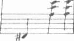
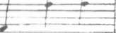

"Burada içme," diye sızlandı Leonie. "Senin içtiğin tütün kötü kokuyor."
167
Kate M o s s e
Anatole omzunu silkti ve öteki cebinden küçük mavi bir kitap çı-
kardı.
"Bak sana vakit geçirmene yardımcı olacak bir şey getirdim."
Odayı geçip kitabı kardeşine verdi ve tekrar yerine oturdu.
"işte," dedi Anatole. "Dağların Cinleri, Uğursuz Ruhları ve Hayaletleri."
Leonie onu dinlemiyordu. Gözleri tekrar pencereye doğru kaydı. Gör-düğü kişinin hâlâ bahçede olup olmadığım merak ediyordu.
"İyi olduğundan emin misin? Yüzün çok solgun."
Leonie, Anatole'ün sesiyle kendine geldi. Elindeki kitaba bakarken nereden geldiğini düşünüyordu.
"Ben iyiyim," dedi utanarak. "Bu kitap da neyin nesi?"
"Hiçbir fikrim yok. Oldukça ürkütücü görünüyor ama tam sana göre!
Kütüphanede tozlu rafların arasında buldum. Audric Baillard adlı yazarı, Isolde cumartesi akşamı yemeğe davet etmeyi planlıyor. Domaine de la Cade'dan söz eden bölümler var. On yedinci yüzyıldaki din savaşlarına kadar gidiyor ve bu bölgeye özgü her türlü cin, kötü ruh ve hayalet hakkında öyküler var." Gülümseyerek kardeşine baktı.
Leonie'nin gözleri kuşkuyla kısıldı. "Bu iyilik nereden çıktı?"
"Bir ağabey en iyi niyetiyle kız kardeşine herhangi bir iyilik yapamaz mı?"
"Bazı ağabeyler elbette yapar. Ama sen?"
Anatole teslim olurcasına ellerini kaldırdı. "Pekâlâ, kitap okumak başını derde sokmanı önler diye düşündüğümü itiraf ediyorum."
Leonie bir yastık fırlatırken Anatole kaçmaya çalıştı.
"Iskaladın," diye güldü. "Çok kötü bir atıştı." Sehpanın üzerindeki tabakasıyla kibrit kutusunu aldı ve birkaç adımda dışarı çıktı. "Mösyö Baillard hakkında ne düşündüğünü öğrenmek isterim. Isolde'ün bir gece içkisi teklifini kabul etmeyi düşünüyorum. Birazdan gideceğim. Sen ne dersin?"
"Bu akşam yemek hazırlanmaması sence garip değil mi?"
168
Tapınak
Anatole kaşlarını kaldırdı. "Karnın aç mı?"
"Şey, hayır ama yine de..."
Anatole parmağını dudaklarına dayadı. "Öyleyse sus," diyerek kapıyı açtı. "Keyifle oku petite. Daha sonra ayrıntılı bir rapor isteyeceğim."
Anatole odasına doğru ilerlerken, gittikçe azalan ıslık ve ayak seslerini dinledi Leonie bir süre.
Ardından bir kapı açılıp kapandı. Eve bir kez daha huzur çöktü.
Leonie yerdeki yastığı alıp yatağa uzandı. Dizlerini göğsüne çekip lahatça yerleşti ve kitabı açtı.
Şömine rafındaki saat buçukta çaldı.
169
25
O O
PARİS
Gözde sokaklar ve bulvarlar alacakaranlığa gömülmüştü. Yoksul mahalleler, apartmanların, gecekonduların labirent gibi sokakları hava kirliliğinde soluk almaya çabalıyordu.
Sıcaklık birden düşmüş, hava soğumuştu.
Binalar, insanlar, tramvaylar, landolar tıpkı hayaletler gibi gölgelerin arasından çıkıp tekrar kayboluyorlardı. Amsterdam Caddesi'ndeki kafelerin tenteleri iplerinden kurtulmaya çabalayan bağlı atlar gibi sert rüzgârda, inip kalkıyordu. Geniş bulvarlardaki ağaçların dallan hızla sallanıyordu.
Dokuzuncu Bölge'nin kaldırımlarında ve Monceau Parkı'nın yeşil patikalarında yapraklar dans ediyordu. Seksek, kovalamaca oynayanlar yoktu, çocuklar şimdi elçilik binalarının içindeydiler. Posta İdaresi'nin yeni telgraf telleri titriyor, tramvay rayları ıslık çalıyordu.
Yedi buçukta sis yerini yağmura bıraktı. Demir talaşı gibi soğuk ve gri yağmur damlacıkları gitgide şiddetle inmeye başladı. Uşaklar panjurları kapattılar. Sekizinci Bölge'de hâlâ sokakta dolaşanlar, yaklaşan fırtınadan korunmak için Royale Sokağındaki Cafe Weber'e sığınıp boş
kalmış birkaç masa için bir yandan münakaşa edip, bir yandan bira ve apsent ısmarlıyorlardı. Gidecek evi olmayan dilenciler ve eskiciler köprülerin altına sığındılar.
170
Tapınak
Berlin Sokağı'nda Marguerite Vernier, evindeki kanepede yatıyordu.
Bir kolu başının altına kıvrılmış, diğeri bir yaz günü kayıkla gezen, düşlere dalmış küçük bir kız gibi aşağıya, halıya sarkmıştı. Yalnızca dudaklarının maviliği, boynunda çirkin bir kolye gibi duran mor bereler ve bileklerindeki pıhtılaşmış kan izleri uyumadığını gösteriyordu.
Tosça gibi, Emma Bovary gibi, Prosper Merimee'nin talihsiz kahramanı Carmen gibi Marguerite de ölürken hâlâ güzeldi. Görevini tamamla-yan kırmızı kan lekeli bıçak, cansız parmaklarından kaymış gibi halının üzerinde, elinin yanında duruyordu.
Victor Constant onun varlığıyla ilgilenmiyordu. Ondan öğrenebileceği-ni umduğu her şeyi öğrendikten sonra kadının artık bir değeri kalmamıştı.
Şömine rafındaki saatin tik takları dışında hiçbir ses duyulmuyordu.
Tek bir mum ışığı dışında her yer karanlıktı.
Constant pantolonunu ilikledi, bir sigara yaktı ve uşağının Vernier'nin komodininde bulduğu günlüğü incelemek için yemek masasına oturdu.
"Bana bir brendi getir."
Constant sarı saplı Nontron bıçağıyla sicimi kesti, kahverengi yağlı kâğıdı açıp koyu mavi defteri ortaya çıkardı. Deftere Vernier'nin bir yıl boyunca her gün yaptıkları kaydedilmişti. Sık gittiği kumarhaneler; iki sütun biçiminde yazılmış ve ödendiği zaman üstü silinmiş kumar borçları; yılın ilk aylarında bir yardakçı olmaktan çok bir kitap alıcısı olarak gizli güçlerle uğraşanlarla kurduğu kısa süreli ilişki; bir şemsiye ya da La Chaussee d'Antin Sokağı'ndaki Edmond Bailly'nin kitapçı dükkânından aldığı sınırlı sayıda basılmış Cinq Poemes adlı kitap gibi bazı alışverişler...
İç sıkıcı günlük ayrıntılarıyla ilgilenmeyen Constant aradığı bilgiye ulaşmasını sağlayacak tarihleri ya da referansları bulmak için sayfalara bir göz atıp hızla çeviriyordu.
Constant, sevdiği tek kadınla Vernier arasındaki ilişkinin ayrıntılarını arıyordu. Bırakın kadının adını yüksek sesle söylemeyi, aklına getirmeye bile gücü yoktu henüz. Geçen yılın 31 Ekim'inde kadın ona aralarındaki ilişkinin sona ermesi gerektiğini söylemişti. Bundan öncesi ise gerçekten çok özel bir ilişkiydi. Constant onun isteksizliğini utangaçlığına vermiş
ve baskı yapmamıştı. Ama gerçekleri öğrenince yaşadığı şok bir anda 171
Kate M o s s e
kontrol edilemez bir öfkeye dönüşmüştü ve neredeyse kadını öldürecekti.
Yan binadaki komşuların, kadının çığlıklarını duyacağından çekinerek öldürmemişti.
Gitmesine izin vermişti. Ne de olsa ona acı vermek istemezdi. Onu seviyordu, ona tapıyordu, ona hayrandı. Ama ihaneti dayanılacak gibi de-
ğildi. Kadın ilişkiyi bu duruma getirmişti.
O geceden sonra kadın Paris'ten gitmişti. Kasım ve aralık ayları boyunca Constant sürekli onu düşünmüştü. Onu çok seviyordu ama buna rağmen kadın onu aldatmıştı. Bedeni ve aklı sürekli olarak birlikte ge-
çirdikleri zamanı; onun kokusunu, narin zarafetini, yanında oturuşunu, sevgisine minnettar oluşunu anımsatıyordu. Ne kadar utangaç, ne kadar uysal, ne kadar kusursuzdu. Bu düşüncelerin ardından terk edilmenin acısı aklına gelince öfkesi biraz daha şiddetlenip vahşileşiyordu.
Onun anılarını silmek için Constant zengin ve uygar alışkanlıkları olan her beyefendinin yapacağı gibi kumarhanelere, gece kulüplerine dadanmış ve hastalığının belirtilerini azaltmak için laudanum'"» içmeye başlamıştı. Uzaktan da olsa onu andıran bir dizi fingirdek kız, onun iha-netinin bedelini bedenleriyle ödeyen fahişeler girmişti yaşamına. Constant çok yakışıklıydı. İstediği zaman çok cömert olabiliyordu. Nasıl baştan çıkaracağını biliyordu ve iştahının ne denli ahlakdışı olduğunu fark edene kadar kızlar da istekli oluyorlardı.
Hiçbir şey onu rahatlatmıyordu. Kadının ihanetinden sonra çektiği ıstırabı azaltmıyordu.
Üç ay boyunca Constant onsuz yaşamayı başardı. Ocak ayının sonunda ise her şey değişiverdi. Seine Nehri'nin üzerindeki buzlar erimeye başlarken, artık dul olan kadının Paris'e geri döndüğü ama yeni bir sevgilisi olduğu dedikoduları kulağına çalındı. Anlaşılan ondan sakındıklarını başka bir erkeğe veriyordu.
Constant'ın acısı daha çok büyümüş, öfkesi artmıştı. İkisinden de intikam alma isteği beynini kemiriyordu. Kendisine çektirdiği acı kadar onun da kanlar içinde aynı acıyı çektiğini görmek istiyordu. İhanetinden dolayı onu cezalandırmak yaşamındaki tek amaç haline gelmişti.
(*) Ağrı kesici olarak da kullanılan bir tür uyku ilacı.
172
Tapınak
Rakibinin adını öğrenmesi kolay oldu. Vernier ile kadının sevgili oldukları gerçeği her sabah gün doğarken aklına gelen ilk düşünceydi. Geceyi karşılamak için ay doğarken de aklından çıkan son düşünce oluyordu.
Ocak yerini şubata bırakırken Constant cezalandırma ve intikam alma sürecini başlattı. Önce Vernier'nin temiz adını yok etmeye kararlıydı.
Taktiği çok basitti. Daha az saygın gazetecilerin kulağına yavaş yavaş dedikodular anlatılıyordu. Sahte mektuplar rüşvet alan ellerde dolaşıyordu.
Paris'in saygın yüzeyinin altında kümelenen, sürekli ihanet korkusu içinde yaşayan gizli hipnotizmacı grupların yeni üyeleri ve yardakçılarının labi-rentine dedikodular yayılıyordu. Haber kırıntıları, alacakaranlık fısıltıları, imzasız iftiraların yayımlanması...
Hepsi yalandı ama inanılır yalanlardı.
Ne var ki, Vernier'ye karşı sürdürdüğü savaş çok iyi gitse bile, Constant huzura kavuşamamıştı. Düşlerine karabasanlar karışıyor, gündüzleri bile birbirine sarılmış sevgililerin imgeleri gözlerinin önünden gitmiyordu. Hastalığı ilerledikçe uykusuzluğa yol açıyordu. Gözlerini kapattığında kendini karabasanların içinde buluyor, ya kırbaçlanıyor ya da bir haça çivileniyordu. Bedenini yerde yatarken, elindeki kayayla ezilmiş Korint-lıos Kralı Sisyphus gibi ya da Prometheus gibi bağlanmış ve sevdiği kadın üzerine eğilmiş karaciğerini sökerken görüyordu.
Mart ayında bazı kararlar aldı. Kadının ölümüyle birlikte Constant bir çeşit huzura kavuştu. Cimetiere de Montmartre'da tabutun ıslak toprağa indirilmesini uzaktan izlerken, omzundan bir yükün kalktığını hissetmişti. Bundan sonra da Vernier'nin yaşamının kendi acısının ağırlığıyla çökmesini büyük bir memnuniyetle izlemişti.
İlkbahar yerini temmuz ve ağustos sıcaklarına bıraktı. Constant bir süredir huzur içindeydi. Eylül ayı gelmişti. Tesadüfen bazı dedikodular kulağına çalınmaya başladı; Haussmann Bulvarı'nda mavi bir şapkanın altından sarı saçlar gördü, altı ay önce Montmantre'da toprağa gömülen bir tabutun boş olduğu fısıltıları etrafta dolaşıyordu. Garnier Sarayı'ndaki isyanın yaşandığı gece Constant iki adamını Vernier'yi sorguya çekmeleri için gönderdi ama kayda değer bir bilgiye ulaşamadan birileri müdahale etmişti.
173
Kate Mosse
Günlüğün sayfalarını bir kez daha çevirip tekrar 16 Eylül tarihine geldi. Sayfa boştu. Vernier, operadaki isyanı ve Panorama Pasajı'nda uğra-dığı saldırıyı yazmamıştı. Günlüğün son yazısı iki gün öncesinin tarihini taşıyordu. Constant sayfayı çevirip bir kez daha okudu. Büyük, özgüvenli harflerle tek bir sözcük vardı.
"Son."
Soğuk bir öfkenin bedenini sardığını hissediyordu. Üç harf alay eder-cesine önündeki sayfada dans ediyordu. Dayandığı bunca şeyden sonra, bir aldatmacanın kurbanı olduğunu keşfetmek, acısını daha çok artırmıştı.
Vernier'yi aşağılamanın kendisine huzur vermeye yeteceğini düşünmek ne kadar aptalcaydı. Şimdi Constant ne yapması gerektiğini biliyordu.
Onları avlayacak ve öldürecekti.
Uşak yanına bir bardak brendi bıraktı. "General Du Pont biraz sonra gelebilir," diye mırıldandı ve tekrar pencereye yaklaştı.
Zamanın geçtiğinin farkına varan Constant, defterin sarılı olduğu kahverengi kâğıdı eline aldı. Günlüğün evde olmasına şaşırmıştı. Eğer geri dönmeyecekse, Vernier niçin günlüğünü burada bırakmıştı? Acaba yola çok acele mi çıkmıştı? Yoksa Paris'ten çok uzun süre ayrı kalmamayı mı planlamıştı?
Constant içkiyi bir yudumda bitirdi ve kadehi şömineye fırlattı. Kadeh binlerce parlak, sivri parçaya bölündü. Uşak irkildi. Odanın havası bir an bu hareketin şiddetiyle titredi.
Constant ayağa kalkıp iskemleyi masanın kenarına yerleştirdi. Şö-
mine rafına yaklaşıp Sevres saatin cam kapağını açtı. Saati sekiz buçuğa ayarladı. Ardından mekanizması duruncaya kadar saati mermer rafın kenarına vurdu. Yere çöküp ön yüzü aşağıya gelecek şekilde brendi kadehinin kırıklarının yanına yerleştirdi.
"Şampanyayı aç ve iki kadeh getir."
Uşak söyleneni yaptı. Constant kanepeye yaklaştı. Saçlarından tutup Marguerite Vernier'nin başını yukarı kaldırdı. Bir mezbahanın tatlı metalik kokusunu alıyordu. Kadının çevresindeki açık renkli yastıklar koyu kırmızıya boyanmıştı; göğsündeki kan lekesi serada yetişip erken olgunlaşmış bir çiçek gibiydi.
174
Tapınak
Marguerite'in ağzına biraz şampanya akıttı. Kadehi dudaklarına değdirip hafif bir ruj izi oluşmasını sağladı ve yarıya kadar doldurup ya-kındaki sehpanın üzerine bıraktı. İkinci kadehe de biraz şampanya koydu ve şişeyi yan olarak yere yatırdı. Şişe ağır ağır boşalırken, baloncuklar lıalıya yayılıyordu.
"Dördüncü Güç'ün sürüngen yoldaşları bu akşam kendileri için bir haber olduğunu öğrendiler mi?"
"Evet, mösyö." Bir an için uşağın yüzündeki ifade değişti. "Hanımefendi... öldü mü?"
Constant yanıtlamadı.
Uşak haç çıkarırken Constant büfeye yaklaşıp çerçeveli bir fotoğrafı eline aldı. Fotoğrafın ortasında Marguerite oturuyor, iki çocuğu da arkasın-da ayakta duruyordu. Fotoğrafın çekildiği stüdyonun adını ve tarihini okudu. Ekim 1890. Kızın saçları omuzlarına dökülmüştü. Hâlâ bir çocuktu.
Uşak öksürdü. "Rouen'e mi gidiyoruz beyefendi?"
"Rouen mi?"
Efendisinin bakışlarını fark edince sinirle parmaklarını oynatmaya başladı.
"Bağışlayın beni beyefendi ama Madam Vernier, kızıyla oğlunun Rouen'e gittiklerini söylememiş miydi?"
"Ah. Evet, tahmin ettiğimden daha fazla cesaret... yüreklilik... gösterdi. Ama Rouen mi? Oraya gittiklerini hiç sanmıyorum. Belki de gerçekten bilmiyordu."
Fotoğrafı uşağa uzattı.
"Dışarı çıkıp kızı soruştur. Birileri bu kızı hatırlayacak ve konuşacaktır. Konuşan birileri hep vardır." Soğuk bir gülümsemeyle devam etti.
"Kız, bizi Vernier ile fahişesine götürecektir."
175
25
O O
DOMAINE DE LA CADE
Leonie çığlık attı. Olduğu yerde doğrulurken kalbi deliler gibi çarpı-
yordu. Mum sönmüş, oda karanlığa gömülmüştü.
Bir an Berlin Sokağı'ndaki salonda olduğunu sandı. Sonra yan tarafa bakınca Mösyö Baillard'ın kitabının yastığın üzerinde durduğunu fark edip nerede olduğunu hatırladı.
Bir karabasan.
İblisler ve ruhlar, hayaletler ve pençeli yaratıklar, örümceğin ağını ördüğü antik kalıntılar; hayaletlerin boş gözleri...
Leonie yatak başına yaslanıp nabzının yavaşlamasını bekledi. Gri bir göğün altında taş bir tapınak, eski bir armalı kalkanın üzerine yerleştirilmiş solmuş çelenkler... Çoktan kokuşmuş ve onurunu yitirmiş bir aile arması...
Ne kadar karanlık düşler.
Nabzının yavaşlamasını bekliyordu ama beynindeki çekiç sesleri gitgide şiddetleniyordu.
"Matmazel Leonie? Bir şeye ihtiyacınız var mı diye sormam için madam beni gönderdi."
Marieta'nın sesini duyunca rahatladı.
"Matmazel?"
Leonie kendini topladı ve seslendi. "Girin."
176
Tapınak
Kapıda bir tıkırtı oldu, hizmetçinin sesi tekrar duyuldu. "Özür dilerim matmazel, kapı kilitli."
Leonie kapıyı kilitlediğini anımsamıyordu. Üşümüş ayaklarını ipek terliklerine soktu ve kapıyı açmak için koştu.
Marieta başını eğerek onu selamladı. "Madam Lascombe ile Senyör Vernier, kendilerine katılıp katılmayacağınızı sormak için beni gönderdiler."
"Saat kaç?"
"Neredeyse dokuz buçuk."
Ne kadar geç.
Leonie gözlerini ovuşturarak uyanmaya çalıştı. "Elbette gelirim. Hemen geleceğimi onlara söyler misin?"
İç çamaşırlarını giydi, pek süslü olmayan bir gece elbisesini üzerine geçirip, saçlarını topladı. Kulaklarının arkasına ve bileklerine biraz kolonya sürüp salona indi.
İçeri girince Isolde ile Anatole ayağa kalktılar. Isolde'ün yüksek yakalı turkuvaz rengi, kısa kollu, Fransız malı, siyah cam boncuklarla süslenmiş
giysisi göz alıcıydı.
"Beklettiğim için özür dilerim," dedi Leonie ve önce Isolde'ü, ardından ağabeyini öptü.
"Neredeyse senden umudumuzu kesecektik," dedi Anatole. "Ne içersin? Biz şampanya içiyoruz... Ah özür dilerim Isolde, bu şampanya değildi.
Aynısından ister misin? Ya da başka bir şey?"
Leonie'nin kaşları çatıldı. "Şampanya değil mi?"
Isolde gülümsedi. "Seninle dalga geçiyor. Şampanya değil ama ona çok benzeyen blanquette de Limoux adlı yerel bir şarap, daha tatlı, daha hafif ve susuzluğu gideriyor. Artık çok keyifle içtiğimi itiraf etmeliyim."
"Teşekkürler," dedi Leonie kadehini alırken. "Mösyö Baillard'ın kitabını okurken dalmışım ve Marieta kapıyı çaldı. Saat dokuzu geçmiş."
Anatole güldü. "Çok sıkıcı olduğu için mi seni uyuttu?"
Leonie başını salladı. "Tam tersine. Büyüleyiciydi. Anladığım kadarıyla, Domaine de la Cade ya da şimdi evin ve arazinin bulunduğu yer çok uzun zamandır birçok batıl inancın ve yerel efsanenin merkeziymiş. Ge-177
F: 12
Kate M o s s e
çeleri dolaşan hayaletler, şeytanlar, ruhlar... En sık rastlanan öyküler kötü zamanlarda kırlarda dolaşıp hayvanları ve çocukları kaçıran, yarı iblis yarı yabanıl hayvan olan, siyah ve korkunç yaratık üzerine."
Anatole ile Isolde bakıştılar.
"Mösyö Baillard'a göre," diye devam etti Leonie. "Bu nedenle tepelerin, göllerin çoğunun adı doğaüstü geçmişlerine işaret ediyormuş. Tabe Dağı'nda bir gölden söz ediyor; adı Şeytan Gölü ve doğrudan cehennemle temas kurduğunu söylüyor. Şeytan Gölü'nün içine bir taş atarsanız, sudan kükürtlü gazlar yükselip korkunç fırtınalara yol açıyormuş. Çok kurak geçen 1840 yazına ait bir öykü var. Yağmur yağmasını isteyen Montsegur köyünden bir değirmenci Tabe Dağı'na tırmanmış ve gölün içine canlı bir kedi atmış. Hayvan debelenince şeytanı çok kızdırmış ve iki ay boyunca hiç durmadan yağmur yağmış."
Anatole arkasına yaslanıp kolunu koltuğun arkalığına uzattı. Şöminede güzel bir ateş yanıyordu.
"Ne kadar da saçma bir batıl inanç," dedi Anatole. "Böyle bir kitabı sana verdiğime pişman oldum."
Leonie yüzünü buruşturdu. "Alay edebilirsin ama bu öykülerin gerçek bir yanı vardır."
"Doğru söyledin Leonie," dedi Isolde. "Merhum kocam, Domaine de la Cade hakkındaki efsanelerle yakından ilgilenirdi. Özellikle Vizigotlar dönemiyle ilgilenirdi ama Mösyö Baillard ile gecenin geç saatlerine kadar çok çeşitli konulardan söz ederlerdi. Kardeş köyümüz olan Rennes-les-Château'nun rahibi de bazen onlara katılırdı."
Uç erkeğin kitaplara gömülmüş hali Leonie'nin gözlerinde canlandı ve Isolde'ün kendini dışlanmış hissedip hissetmediğini merak etti.
"Abbe Sauniere," dedi Anatole. "Öğleden sonra Couiza'dan gelirken Gabignaud ondan söz etmişti."
"Ayrıca..." diye ekledi Isolde, "Mösyö Baillard'ın yanında Jules'ün hep temkinli davrandığını da söylemem gerekir."
"Temkinli mi? Nasıl yani?"
Isolde ince beyaz elini salladı. "Belki de temkinli doğru bir sözcük değil. Neredeyse önünde saygıyla eğilirdi. Aslında ne demek istediğimden 178
Tapınak
pek emin değilim. Mösyö Baillard'ın yaşına ve bilgisine saygı duyduğu gibi, bilgeliğine de hayrandı."
Anatol kadehleri doldurdu ve bir şişe daha getirmeleri için zili çaldı.
"Baillard bu yöreden mi?"
Isolde başını salladı. "Rennes-les-Bains'de mobilyalı bir lojmanda ka-lıyor ama esas evi başka yerde. Sanırım Sabarthes bölgesinde. Olağanüstü
.ima aynı zamanda içine kapanık bir adam. Geçmiş deneyimleri hakkında ağzı sıkı ve ilgi alanları çok geniş. Yerel gelenek ve göreneklerin dışında Albigen Heretikler konusunda da uzman." Isolde bir an güldü. "Bir keresinde Jules, betimlemeleri çok canlı olduğundan Mösyö Baillard'ın neredeyse ortaçağdaki savaşlara tanık olduğunun bile düşünüleceğini söylemişti."
Herkes gülümsedi.
"Belki yılın en uygun mevsimi değil ama şato kalıntılarını görmek ister misin?" diye sordu Leonie'ye. "Elbette hava izin verirse."
"Çok hoşuma gider."
"Cumartesi akşamı yemekte seni Mösyö Baillard'ın yanına oturturum, bu dağların efsaneleri, batıl inançları ve şeytanları hakkında istediğin her soruyu ona sorarsın."
Mösyö Baillard'ın öykülerini anımsayan Leonie başını salladı. Anatole sessizleşti. Sanki sohbetin arasına hiç kimse fark etmeden değişik bir hava girivermişti. Bir süre için yalnızca saatin tik takları ve şöminedeki alevlerin hışırtısı duyuldu.
Leonie'nin bakışları pencerelere doğru kaymıştı. Gece olunca kepenkleri kapatılmıştı ama ardındaki karanlığı algılayabiliyordu. Sanki yaşıyor, soluk alıyordu. Rüzgâr evin köşelerinde ıslık çalıyordu ama Leonie gecenin mırıldandığını, ormanın eski ruhlarını uyandırdığını düşünüyordu.
Yumuşak ışıkta tüm güzelliği ve dinginliğiyle oturan Isolde'e baktı.
O da bunu hissediyor mu?
Isolde'ün ifadesi sakin, heyecansızdı. Aklından geçenleri Leonie'nin okuyabilmesi olanaksızdı. Kocasının yokluğu acı vermiyor gibiydi. Evin taş duvarlarının ötesinde neler bulunabileceği hakkında kaygılı olduğu ya da korktuğunu gösteren bir belirti yoktu. Leonie kadehindeki b!anquette şarabına baktı ve içip bitirdi.
179
Kate M o s s e
Saat buçuğu çaldı.
Isolde cumartesi akşamı vereceği yemeğin davetiyelerini yazacağını söyleyerek çalışma odasına çekildi. Anatole tepsiden küt, yeşil Benedictine şişesini alıp biraz daha oturacağını ve bir puro içeceğini söyledi.
Leonie, ağabeyine iyi geceler öpücüğü verip salondan çıktı. Koridorda yürürken, günün anılarına daldığından adımları pek de düzgün değildi.
Yaşadıklarının bazıları ona zevk vermiş bazıları meraklandırmıştı. Anatole'ün en sevdiği şekerin Pirene İncisi olduğunu Isolde'ün tahmin etmesi ne kadar kurnazcaydı. Üçü de birbirinin dostluğundan hoşlanmış gibiydi.
Yaşayabileceği maceraları, evi dolaşmayı ve hava uygun olursa araziyi gezmeyi düşledi.
Elini merdiven korkuluğuna atarken piyanonun kapağının baştan çı-
karırcasına açık durduğunu fark etti. Siyah ve beyaz tuşlar yeni cilalanmış
gibi mum ışığında ışıldıyordu. Piyanonun maun gövdesi parlıyordu.
Gerçi Leonie çok yetenekli bir piyanist değildi, ama yine de el değme-miş tuşların davetine karşı koyamadı. Bir skala, bir arpej ve bir akor çaldı.
Akordu yapılmış, özenle korunmuş gibi, piyanonun tatlı, yumuşak bir sesi vardı. Parmaklarının istediği yere gitmesine izin verip minör anahtarda eski, hüzünlü bir parça çaldı. Melodinin la, mi, do, re notalarından oluşan tek bir mezürü holün sessizliğinde yankılandı ve duyulmaz oldu. Hüzünlü, davetkâr, kulağa hoş gelen bir sesti.
Leonie parmaklarının tersiyle oktavları tırmanıp parçayı bitirdi ve ardından odasına gitti.
Saatler geçti. Leonie uyudu. Mumlar teker teker söndü. Gri duvarların dışında, bahçeler, arazi, göl, kayın ormanı beyaz ay ışığında sessizlik içindeydi. Her şey hareketsizdi.
Ama yine de...
180
DÖRDÜNCÜ BÖLÜM
Rennes-Les-Bains
Ekim 2007
25
O O
RENNES-LES-BAINS
29 EKİM 2007 PAZARTESİ
Meredith'in uçağı Toulouse Blagnac Havaalanı'na tahmini varış saatinden on dakika önce indi. Saat dört buçukta kiralık aracını almış, otoparktan çıkış yolunu arıyordu. Spor ayakkabıları, kot pantolonu ve büyük sırt çantasıyla tıpkı bir öğrenciye benziyordu.
Kent dışındaki yolda iş çıkış saati trafiği, sanki silahların olmadığı Grand Theft Auto filmindeki kadar yoğundu. Her taraftan üzerine doğru gelen araçlardan ürkerek direksiyonu sımsıkı tuttu, klimayı açtı ve gözlerini ön cama dikti.
Otoyola çıkınca trafik sakinleşti ve Meredith radyoyu açacak kadar güven kazandı. Önceden ayarlanmış klasik müzik istasyonunun sesini yükseltti. Her zamanki gibi Bach, Mozart, Puccini ve hatta biraz Debussy.
Carcassonne'a kadar hiçbir yere sapmadan yol aldı, otuz dakika sonra Mirepoix ve Limoux üzerinden gitmek için otoyoldan ayrıldı. Couiza'da sola, Arques tarafına döndü, dönemeçli yolda on dakika gidip tekrar sağa saptı. Saat altı olduğunda heyecan ve beklentisi artmıştı; bunca zamandır üzerinde düşündüğü kasabaya neredeyse ulaşıyordu.
Rennes-les-Bains kasabası hakkında ilk izlenimleri cesaret vericiydi.
Tahmin ettiğinden daha küçüktü ve anacaddesi -anacadde demek biraz abartmak oluyordu- ancak iki aracın geçebileceği genişlikteydi, ama yine 183
Kate Mosse
de sevimli bir görüntüsü vardı. Sokaklarda hiç kimsenin olmaması bile Meredith'i tedirgin etmedi.
Çirkin bir taş yapının ve giriş kapısındaki metal tabelada JARDIN
DE PAUL COURRENT, duvarında LE PONT DE FER yazan güzel bir bahçenin önünden geçti. Ani bir fren yaparak biraz ileride duran mavi Peugeot'ya çarpmaktan son anda kurtardı.
Önünde birkaç araba sıralanmıştı. Meredith radyoyu kapattı, daha iyi görebilmek için pencereyi açtı. Biraz ileride yol kapalı yazılı sarı tabelanın yanında birkaç işçi duruyordu.
Peugeot'nun sürücüsü arabadan inip bağırıp çağırarak işçilere yaklaştı. Meredith biraz bekledi ve öteki sürücülerin de indiğini görünce, o da indi ve Peugeot'nun geri dönen sürücüsüyle karşılaştı. Ellili yaşların sonlarında, şakaklarına kır düşmüş, biraz kilolu bir adamdı. İstediğini yaptırmaya alışkın bir insanın görünümü ve duruşu vardı. Meredith'in ilgisini çeken nokta ise adamın giyim tarzıydı. Siyah ceket, siyah pantolon, kravat ve cilalı ayakkabılarıyla son derece resmi görünüyordu.
Arabanın plakasına göz atınca bu bölgeye ait olduğunu anladı.
"Ne olmuş?" diye sordu adam yaklaşınca.
'Ağaç kırılmış," dedi adam ilgisizce.
Adam İngilizce yanıtladığı için Meredith biraz kızdı, çünkü Fransızca aksanı hiç de kötü sayılmazdı.
"Peki işin ne kadar süreceğini söylediler mi?" diye terslendi.
"En azından yarım saat," dedi adam arabasına binerken. "Midi'de bunun anlamı üç saat bile olabilir. Hatta yarın."
Gitmek için sabırsızlanır gibiydi. Meredith yaklaşıp elini kapıya dayadı. "Başka bir yol var mı?"
Bu kez adam çelik mavisi dik bakışlı gözleriyle ona baktı.
"Couiza'ya geri dönüp Rennes-les-Château üzerinden tepeleri aşmak gerekir," dedi. "Akşamın bu saatinde en az kırk dakika sürer. Ben bekleyeceğim. Karanlıkta yolu bulmak sorun olabilir." Önce Meredith'in eline, sonra yüzüne baktı. "Eğer izin verirseniz?"
Meredith'in yanakları kızardı. "Yardımınız için teşekkür ederim,"
diyerek geriledi. Adamın kaldırıma yanaşıp park etmesini ve inip anacad-184
Tapınak
dede geldikleri yönde yürümesini izledi. Tartışmaya girilecek bir adam değil, diye düşünürken niçin bu kadar kızdığını anlamıyordu.
Bazı sürücüler dar yolda zorlukla dönüp geldikleri yöne gitmeye başladılar. Meredith bir süre bekleyip, düşündü. Ne kadar kaba davransa da adam iyi bir öğüt vermişti. Tepelerde yolunu kaybetmenin bir anlamı yoktu.
Kasabayı yürüyerek keşfetmeye karar verdi. Kiralık arabayı mavi Peugeot'nun arkasına park etti. Atalarının Rennes-les-Bains'den geldiklerin-den emin olmadığı gibi, 1914 yılındaki o asker fotoğrafı belki de rastlantı olarak burada çekilmiş olabilirdi. Ama elindeki pek az ipucundan yalnızca biriydi. Hemen aramaya başlayabilirdi.
Yan koltuğun üzerinde duran çantasına uzandı, dizüstü bilgisayarı-
nın çalınması fikrini aklına bile getirmek istemiyordu. Küçük bavulunun durduğu bagajın kilidini kontrol etti. Arabayı sağlama alınca birkaç adım yürüyüp, Station Thermale et Climatique yazan kaplıca binasına ulaştı.
Kapının üzerinde elle yazılmış kâğıtta, kaplıcanın 1 Ekim'den 30
Nisan 2008 tarihine kadar kış nedeniyle kapalı olduğu yazılıydı. Meredith kâğıda bakakaldı. Bütün yıl açık olacağını varsaydığından önceden telefon etmeyi akıl etmemişti.
Elleri cebinde bir süre kapının önünde durdu. Karanlık pencereler binanın tümüyle boş olduğunu gösteriyordu. Gerçi Lilly Debussy'nin izini arama fikrinin, aslında buraya gelmek için bir bahane olduğunu itiraf ediyordu; ama yine de eski kaplıcadan umutluydu. Eski kayıtlar, yüzyılın başından kalma fotoğraflar Rennes-les-Bains'in bölgedeki en çok rağbet gören yerlerden biri olduğuna işaret ediyordu.
Meredith, kapalı kepenklerine bakarken; 1900 yazında nekahet dö-
nemi için Lilly'nin buraya gönderildiğinin ya da üniformalı genç askerin buraya geldiğinin kanıtları kaplıcada olsa bile, şimdilik bunlara ulaşamayacağını biliyordu.
Belediye başkanı ya da herhangi birini kendisini içeri alması için ikna etmesi olasıydı ama Meredith pek umutlu değildi. Daha önce düşünmediği için kendine kızarak geri dönüp sokakta yürümeye başladı.
185
Kate M o s s e
Kaplıca binalarının sağ tarafında Allee des Bains de la Reine yazan bir sokak vardı. Aniden çıkan rüzgâra karşı ceketine sarınarak, suyu bo-
şaltılmış büyük havuzun yanından geçti. Havuzun içi ve çevresi bakımsız görünüyordu. Çatlamış mavi karolar, zemin tahtalarının soyulan pembe boyası, kırık beyaz şezlonglar... Havuzun daha önce kullanıldığına inanmak bile zordu.
Nehrin kıyısına kadar yürüyen Meredith, burada bir tek insan bile göremezdi. Çamurlu arazinin üzerindeki çok sayıdaki lastik izi, lisedeki maç sonrası partilerinin, çamurlu arazinin lastik izleriyle dolup taştığı ertesi sabahlarını çağrıştırıyordu. Patikanın kenarında eğrilmiş, iç karartıcı görünümlü metal banklar; altında ahşap bir bank olan taç biçiminde paslanmış bir metal pergola vardı. Yıllardır kullanılmamış gibiydi. Meredith yukarı doğru bakınca güneşten korunmak için tentenin asıldığı metal çengelleri fark etti.
Alışkanlığından vazgeçmeden çantasından kamerasını çıkarıp birkaç kare fotoğraf çekti. Loş ışığa göre ayarlarını yaptı ama fotoğraflardan so-nuç alacağından emin değildi. Lilly'yi üzerinde beyaz bluzu, siyah eteği, geniş kenarlı şapkasıyla bu banklardan birine oturmuş, Debussy ile Paris'i düşlerken gözlerinin önünde canlandırmaya çalıştı. Sepya renkli fotoğraftaki genç askeri, nehir kıyısında kolunda bir kızla hayal etmek istedi ama başaramadı. Mekân yanlıştı. Her yer harabeye dönmüş ve terk edilmişti.
Dünya sanki yürüyüp gitmişti.
Hiç tanımadığı, hayal ettiği bir geçmişin özlemine kapılarak ağır ağır nehir kıyısında yürüdü. Kıvrımlı yol nehri geçen düz, beton bir köprüye ulaştı. Karşıya geçmeden önce durakladı. Öteki tarafın daha az kullanıldığı belliydi. Yabancı bir kasabada çantasında değerli bir dizüstü bilgisayar ve kamerayla başıboş dolaşmak pek akıllıca değildi.
Üstelik hava kararıyor.
Yine de bir şeylerin kendisini çektiğini hissetti Meredith. Keşfetme ya da macera yaşama isteği, diye düşündü. Kasabayı yakından tanımak istiyordu. Modern kafeleri ve arabaları olan anacaddeyi değil, yüzlerce yıldır burada olan gerçek yeri öğrenmeliydi. Eğer bu kasabayla arasında 186
Tapınak
bir bağ varsa, burada geçirdiği kısacık zamanı boşa harcamış olmayacaktı.
Çantasını göğsüne çapraz asıp nehrin öte yanına geçti.
Karşı yakanın atmosferi farklıydı. İnsanlardan ya da modadan etkilenmeyen daha dayanıklı bir ortamda olduğunu hissetti. Yontulmamış, sivri tepeler tam önünde dimdik yükseliyordu. Çalıların ve ağaçların alacalı yeşilleri, kahverengileri, bakır tonları günbatımının renklerini taşıyordu.
Çekici olması gerekirken her nasılsa bu manzaranın rahatsız edici bir larafı vardı. Gerçek yüzü, sanki bütün o renklerle gizlenmişti ve yalnızca ikiboyutluymuş gibi, yani bir resim gibi görünüyordu.
Kararmaya başlayan bu ekim akşamında Meredith uzamış yabangülleri, basılıp düzleşmiş otlar ve rüzgârın getirdiği çöpler arasında dikkatle ilerlemeye çalıştı. Yukarıdaki yoldan geçen bir arabanın farları dağların kasabayla birleştiği gri kaya yamacı bir an için aydınlattı.
Motor sesi azaldı ve tekrar sessizlik çöktü.
Meredith patikanın sonuna kadar yürüdü ve dağ tarafına giden yolun altındaki siyah tünelin ağzına ulaştı.
Bir çeşit yağmur suyu kanalı mı?
Elini soğuk tuğla duvara yaslayıp öne eğildi ve içeri bakarken taş
kemerin altına hapsolmuş nemli havanın cildine fısıldadığını hissetti. Bir huniden geçer gibi dar kanala giren su burada daha hızlı akıyordu. Sivri kayaların üzerinden aşarken beyaz damlacıklar tuğla duvarlara çarpıyordu.
Üzerinde bir tek kişinin durabileceği daracık bir çıkıntı vardı.
içeri girmek pek akıllıca değil.
Yine de başını eğdi, sağ eliyle dengesini sağlamak için tünelin nemli duvarına tutundu ve karanlığa doğru bir adım attı. Bir anda nemli hava, su ve yosun kokusu burnuna doldu. Üzerinde durduğu çıkıntı kaygandı. Biraz daha, biraz daha ilerledi; morumsu alacakaranlık yalnızca bir ışıltı halinde kalıp nehrin kıyısını göremeyinceye kadar yürüdü.
Eğimli duvara çarpmamak için başını eğip dikkatle suya baktı. Koşuş-
turan minik siyah balıklar, akıntının hızıyla düzleşmiş yeşil otlar, alttaki taşlara çarpan dalgaların oluşturduğu, danteli andıran beyaz köpükler...
Suyun sesi ve hareketiyle adeta uyuşarak yere çömeldi. Gözleri oda-
ğını yitirdi. Köprünün altı gizli, saklanılabilecek bir yerdi. Burada kolayca geçmişi çağırabilirdi. Akan suya bakarken, kısa pantolonlu, çıplak ayaklı 187
Kate Mosse
küçük oğlanların ve bukleli saçları saten kurdelelerle süslenmiş küçük kızların köprünün altında saklambaç oynadıklarını hayal edebiliyordu.
Nehrin öbür yakasından çocuklarını çağıran yetişkinlerin seslerini bile duyabiliyordu.
Neler oluyor?
Bir an için kendisine doğru bakan bir yüz gördüğünü sandı. Gözleri kısıldı. Sessizliğin daha da derinleştiğinin farkındaydı, sanki içinden ya-
şam sökülüp alınmış gibiydi. Ama sonra yüreğinin çarptığını, duyularının keskinleştiğini fark etti. Bedenindeki tüm sinirler gerilmişti.
Bu, yalnızca benim görüntüm.
Bu kadar kolay etkilenmemeliyim diyerek suya bir kez daha baktı.
Bu kez kuşkusu kalmamıştı. Suyun altından bir yüz ona bakıyordu.
Ama bu bir yansıma değildi. Gerçi Meredith kendi yüz hatlarının da imgenin içinde olduğunu hissediyordu; ama upuzun saçları akıntıyla dağılan, Ophelia gibi biri, ona bakıyordu. Suyun altındaki gözler ağır ağır açıldı ve Meredith'in bakışlarını yakaladı. Yeşil camı andıran gözler suyun değişen tüm renklerini içeriyordu.
Meredith çığlık attı. Şaşkınlıkla gerileyince neredeyse dengesini yiti-riyordu; ellerini uzatıp arkasındaki duvara tutundu. Bir kez daha bakmaya kendini zorladı.
Hiçbir şey yok.
Aşağıda hiçbir şey yoktu. Ne yansıma ne bir hayaletin suratı; yalnızca akıntının hızıyla taşların ve tahta parçalarının değişen şekilleri. Taşların üzerinden akan su, aşağıdaki otları dans ettiriyordu.
Artık Meredith bir an önce tünelden çıkmak istiyordu. Islak zeminde ayaklan kayarak açık havaya ulaşana dek zorlukla yürüdü. Bacakları titriyordu. Çantasını omzundan sıyırıp kuru otların üstüne attı ve yere oturup çenesini dizlerine dayadı. Yukarıdaki yoldan kasabanın dışına doğru giden arabanın farları parladı.
Başlıyor mu?
Meredith'in en büyük korkusu öz annesini pençesine alan hastalığın bir gün kendisinde de görülmesiydi. Başka kimsenin görmediği, duymadığı hayaletler, sesler...
188
Tapınak
Derin soluklar alıp vermeye başladı.
Ben o değilim.
Birkaç dakika sonra ayağa kalktı. Giysilerini silkeledi, spor ayakkabı-
larının altındaki çamuru ve otları temizledi, ağır çantasını omzuna yerleş-
tirip köprüden patikaya giden yolu izledi.
Yaşadığı sarsıntıdan sıyrılamamıştı ama bu kadar ürkek olduğu için bir yandan da kendine kızıyordu. Çok eskiden alışkanlık edindiği, kötü anı-
lardan kurtulmak için iyilerini çağırmak tekniğini uyguladı. Jeannette'in ağlamasının acı veren anıları yerine Mary'nin sesini işitti. Sıradan annelik işleri. Çamura bulanmış, pantolonunun dizleri yırtılmış, kolları bacakları çizikler içinde eve geldiğinde bu sesleri çok duymuştu. Eğer Mary şu anda burada olsaydı, her zamanki gibi Meredith'in kendi başına dolaşmasından, üstüne vazife olmayan işlere burnunu sokmasından kaygılanırdı.
Eskisi gibi, eskisi gibi.
İçi ev özlemiyle doldu. İki hafta önce Avrupa'ya gelişinden bu yana ilk kez en sevdiği koltukta elinde güzel bir kitapla kıvrılmış olmayı istedi.
Beşinci sınıftayken bir dönem okula gitmediği günleri; Mary'nin diktiği eski battaniyeye sarınmış, güven içinde oturduğu anları düşündü. Şimdi Fransa'nın unutulmuş bir köşesinde anlamsız bir şeyi kovalamaktansa, evde olmayı yeğlerdi.
Üşümüştü ve mutsuzdu. Saate bakmak için cep telefonunu çıkardı; telefon sinyal vermiyordu ama saati görebiliyordu. Arabadan indiğinden bu yana on beş dakika geçmişti. Omuzları çöktü. Herhalde yol daha açılmamıştı.
Allee des Bains de la Reine patikasından geri dönmek yerine nehir kıyısındaki evlerin arkasından yürümeyi yeğledi. Bulunduğu yerden uzun kolonlarla patikanın üzerine yükseltilmiş yüzme havuzunun altını görebiliyordu. Eski binaların planı bu açıdan daha net görülüyordu. Payandaların arasındaki gölgelerde dolaşan bir kedinin parlak gözlerini gördü. Rüzgârın taşıdığı çöpler, kâğıt parçaları, soda şişeleri tellere ve tuğlalara takılmıştı.
Nehir sağa doğru kıvrıldı. Biraz ileride, yukarıdaki sokaktan suyun yanındaki patikaya kadar nehir boyunca inen duvarda bir kemer vardı.
Sokak lambaları yanmıştı ve taşların oluşturduğu havuzda çiçekli mayolu, 189
K a t e M o s s e
boneli yaşlı bir kadının yüzdüğünü görebiliyordu. Havlusu dikkatle katlanıp patikaya bırakılmıştı. Meredith, suyun yüzeyinden yükselen buharı fark etmediği için bir an titredi. Kadının yanında zayıf, esmer, buruşuk bedenini kurulayan yaşlı bir adam vardı.
Serin bir ekim akşamını böyle geçirmek istemezdi, ama yaşlı çiftin cesaretine de hayran kalmıştı. Yüzyılın başında Rennes-les-Bains'in çok canlı bir tatil yeri olduğu şaşaalı günlerini hayal etmeye çabaladı. Tekerlekli banyo kulübeleri, eski moda mayolar içinde hanımefendiler, beyefendiler sıcak tedavi edici suya giriyorlar, uşakları ve hemşireleri nehrin kıyısında onları bekliyor.
Başaramadı. Perdenin kapanıp yöneticinin ışıklarını söndürdüğü bir tiyatro gibi Rennes-les-Bains de böyle hayaller için fazla harap bir görü-
nüm almıştı.
Korkuluğu olmayan daracık bir merdiven, nehrin iki yakasını birleş-
tiren mavi boyalı metal bir yaya köprüsüne çıkıyordu. Daha önce gördüğü tabelayı anımsadı: LE PONT DE FER. Kiralık arabasını tam da buraya bırakmıştı.
Meredith merdivenden çıktı. Uygarlığa geri dönüş.
190
25
O O
Meredith'in tahmin ettiği gibi yol henüz açılmamıştı. Arabası bıraki ı ğ ı yerde, mavi Peugeot'nun arkasında duruyordu. Birkaç araba daha onlara katılmıştı.
Anacaddeden Paul Courrent Bahçesi'ni geçip ışıklara doğru yürüdü ve dağın yamacına giden dik bir yokuşa saptı. Kasabanın bu kadar tenha görünmesine karşın yolun sonundaki otopark dolu sayılırdı. Önemli noktaları gösteren ahşap tabelayı okudu: L'Homme Mort, La Cabanasse, La Source de la Madeleine ve komşu köy Rennes-le-Château'ya'*' giden köy yolu.
Yağmur yağmıyordu ama hava nemliydi. Her şey boğuk ve sessiz gö-
rünüyordu. Meredith çıkmaz sokaklara, evlerin parlak ışıklı pencerelerine bakarak biraz daha yürüdü ve tekrar anacaddeye döndü. Tam karşısındaki belediye binasının mavi-beyaz-kırmızı bayrağı akşam rüzgârıyla dalgalanıyordu. Sola dönünce kendini Deux Rennes Meydanı'nda buldu.
Bir an durup çevresine bakındı. Sağ taraftaki pizzacının sokaktaki ahşap masalarından yalnızca birkaçını İngiliz turistler doldurmuştu. Bir masadaki erkekler futbol ve müzisyen Steve Reich'ten söz ediyordu. Siyah saçları modaya uygun kısacık kesilmiş bir kadın, sarı saçları omzuna dökülmüş bir diğeri ve kestane renkli bukleleri savrulan üç kadın ise bir şişe şarabı paylaşırken polisiye roman yazarı lan Rankin'in en son yapıtını (*) Rennes Şatosu.
191
Kate Mosse
konuşuyorlardı. İkinci masayı işgal eden öğrenciler ise pizza yiyip bira iç-
mekteydiler. Delikanlılardan birinin sırtında mavi metallerle süslü deri bir ceket vardı. Diğeri, ayağının dibinde bir şişe açılmamış Pinot Grigio şarabı duran koyu renk saçlı arkadaşına Küba'yı anlatıyordu ve daha genç görü-
neni kitap okuyordu. Grubun son üyesi olan saçları pembe röfleli genç kız sanki fotoğraf çekiyormuş gibi parmaklarını kare biçiminde birleştirmiş
içinden bakıyordu. Kendi öğrencilerini anımsayan Meredith gülümseyerek yanlarından geçerken genç kız karşılık verdi.
Meydanın uzak köşesinde diğer binaların çatılarından daha yüksek, tepesinde bir çan olan clochemur'ü görünce kiliseyi bulduğunu fark etti.
Taş döşeli yoldan Saint-Celse ve Saint-Nazaire kiliselerine yaklaştı.
Kuzey ve güney rüzgârlarına açık olan sundurmada bir lamba yanıyordu.
Birbiriyle uyumsuz, iki boş masa vardı.
Kapının yanındaki ilan tahtası tören günleri, düğünler ve cenazeler dışında kilisenin her sabah saat ondan günbatımına kadar açık olduğunu bildiriyordu. Ne var ki, içerisi aydınlık olmasına karşın kapı kilitliydi.
Meredith saatine baktı. Altı buçuk. Herhalde geç kalmıştı.
Arkasını dönünce karşı duvarda, Birinci Dünya Savaşında yaşamını yitiren Rennes-les-Bains askerlerinin listesini gördü.
A ses Glorieıvc MortsP
Sepya fotoğraftaki askeri düşünerek ölüm ne zamandan beri görkemli oldu diye merak etti. Peki, cepleri taşlarla doldurup, Michigan Gölü'ne giren öz annesine ne demeli? Yaptığı fedakârlığa değer miydi?
Yaklaşıp tüm listeyi okurken Martin adını bulmayı beklemenin anlamsız olduğunun bilincindeydi. Çılgınlıktı. Mary'nin anlattığı kadarıyla Martin adının Louisa'nın annesinin soyadı olduğunu biliyordu. Daha doğ-
rusu Louisa'nın doğum kimliğinde BABASI BİLİNMİYOR yazıyordu. Yine de Meredith atalarının Birinci Dünya Savaşını izleyen yıllarda Fransa'dan Amerika'ya göç ettiklerini biliyordu. Yaptığı bunca araştırmadan sonra fotoğraftaki askerin Louisa'nın babası olduğundan neredeyse emindi.
Yalnızca bir isme gereksinimi vardı.
(*) Görkemli ölenlerin anısına.
192
Tapınak
Gözüne bir şey takıldı. BOUSQUET adı listede yazılıydı. Bagajdaki çantasında duran tarot kartlarıyla aynı isim. Aynı aile olabilir mi? Kontrol edilmesi gereken başka bir nokta daha. Okumaya devam etti. En altta pek sık rastlanmayan bir isim vardı: SAINT-LOUP.
İsim listesinin yanında 1872-1915 yılları arasında bölge rahipliği yapan Henri Boudet adına bir taş plaket ve bir siyah metal haç yer alıyordu.
Meredith bunu düşündü. Eğer fotoğraftaki asker bu bölgeden geliyorsa llenri Boudet onu tanıyor olabilirdi. Ne de olsa küçük bir kasabaydı ve tarihler birbirini tutuyordu.
Hepsini not etti. Araştırmanın birinci kuralı, hatta ikinci ve üçüncü kuralı her şeyi not etmektir. Hangi ipucunun daha sonra gerekli olacağını önceden kestiremezsiniz.
Haçın altında İmparator Constantine'in ünlü sözleri yazılıydı. "Bu işaretle fethedeceksin." Meredith bu sözlerle daha önce de defalarca karşı-
laşmıştı a m a bu kez sözler, başka düşüncelerin aklına üşüşmesine yol açtı.
"Bu işaretle fethedeceksin," diye mırıldanırken aklına neyin takıldığını çözmeye çalıştı ama bulamadı.
Kilisenin giriş kapısının önünden geçip, mezarlığa girdi. Tam karşı-
sında başka bir savaş anıtı daha vardı. Sanki bir tek anıt onların fedakârlığı için yetersizmiş gibi aynı isimlere bir iki tane daha eklenmiş, bazıları farklı yazılmıştı.
Kuşaklar boyu erkekler, babalar, kardeşler, oğullar, bunca yaşam...
Meredith kasvetli alacakaranlıkta kilisenin yanındaki çakıllı yoldan ağır ağır yürüdü. Sanki mezarlardaki taş melekler, haçlar, yanından geçerken ona bakıyormuş gibiydi. Ara sıra durup bir taşın üzerinde yazanları okudu. Bazı isimler defalarca tekrarlanıyordu. Fromilhague ve Sauniere, Denarnaud ve Gabignaud gibi yörenin tanınan aileleri granit ve mermer taşlarla hatırlanıyordu.
Mezarlığın uzak köşesinde nehir vadisine bakan noktada metal çerçe-ve üzerine oyulmuş LASCOMBE-BOUSQUET AİLESİ yazan süslü bir aile mezarının önünde durdu.
193
F: 13
Kate Mosse
Gitgide kararan ışıkta, eğilip Lascombe ve Bousquet ailelerini önce evlilik ve doğum şimdi de ölümde birleştiren tarihleri okudu. Guy Lascombe ile karısı 1864 ekiminde ölmüşlerdi. Lascombe soyunun sonuncusu olan Jules 1891 ocak ayında ölmüştü. Bousquet'lerin son üyesi Madeleine Bousquet ise 1955 yılında yaşama veda etmişti.
Ensesinde tanıdık bir ürpertinin dolaştığını hissederek doğruldu. La-
ııra, ona yalnızca bir tarot destesi ve Bousquet adıyla ilgili tesadüfü değil daha fazlasını da vermişti. Okuduğu tarihle bağlantılı bir şey biliyordu ama o zaman pek üzerinde durmamıştı.
Birden anladı. Sürekli 1891 yılı karşısına çıkıyordu. Kendi açısından bu tarih önemliydi, çünkü ondaki müzik notasının üzerinde de yazılıydı.
Sanki kâğıdı elinde tutuyormuş gibi parçanın adını ve tarihini açıkça gö-
rebiliyordu.
Ama bir şey daha vardı. Mezarlığa adım attığından bu yana aklından geçen her şeyi bir kez daha gözden geçirdi. Yalnızca yıl değil, ay ve gün de sıkça tekrarlanmıştı.
Ani bir heyecanla mezarların arasından geriye doğru yürüyüp taşlan okudu ve haklı olduğunu gördü. Hafızası onu yanıltmıyordu. Defterini çı-
karıp dört kişinin de aynı tarihte ölmüş olduğunu not etti.
Hepsi 31 Ekim 1891 tarihinde ölmii§.
Arka tarafta kilisedeki küçük çan çalmaya başladı.
Meredith dönüp kilisenin pencerelerinden yayılan ışığa bakarken, gökte yıldızların parlamaya başladığını fark etti. Birtakım mırıltılar kula-
ğına çalındı. Kilisenin kapısı açılınca sesler biraz yükseldi ve kapı tekrar kapandı.
Sundurmaya dönünce iki ahşap masadan birinin üzerinde selofana sarılmış demetler, buketler, kırmızı saksılarda çiçekler gibi çeşit çeşit armağanlar durduğunu gördü. Kalın kırmızı bir örtü serilmiş olan ikinci masanın üstünde ise büyük bir taziye defteri açılmıştı.
Meredith deftere bakmaktan kendini alamadı. Bugünün tarihi altına doğum ve ölüm tarihleri yazılmıştı. SEYMOUR FREDERICK LAVVRENCE.
15 EYLÜL 1938 - 24 EYLÜL 2007.
194
Tapınak
Saat geç olmasına karşın cenaze töreni başlamak üzereydi. Kalabalığa karışmamak için hızlı adımlarla Deux Rennes Meydanı'na döndü. Şimdi meydan kalabalıklaşmıştı. Her yaştan insan alçak sesle konuşarak dolaşı-
yordu. Blazer ceketli erkekler, açık renkli, ütülü elbiseleri içinde kadınlar, güzel giysilerine bürünmüş çocuklar... Mary bunlara "en iyi pazar giysileri" adını verirdi.
Pizzacının gölgesinde dururken dikkat çekmeden; yas tutanların kilisenin yanındaki papaz evine birkaç dakika için girip, dışarıdaki taziye defterini imzalamalarını izledi. Sanki tüm kasaba halkı buradaydı.
"Ne olduğunu biliyor musunuz?" diye sordu kadın garsona.
"Saygın birinin cenazesi, hanımefendi."
Kısa siyah saçlı, zayıf bir kadın duvara dayanmış duruyordu. Hiç kıpırdamıyordu ama gözleriyle her yanı kolaçan ediyordu. Sigarasını yakmak için kolunu kaldırınca, bluzunun kolları kaydı ve Meredith, kadının bileklerindeki kalın, kırmızı yara izlerini gördü.
Birinin kendisine baktığını hissetmiş gibi kadın başını çevirip doğru-ca ona baktı.
"Önemli biri miydi?" dedi Meredith, bir şeyler söylemek ihtiyacı hissederek.
"Çok saygın ve sevilen biri," diye yanıtladı kadın İngilizce.
Elbette. Açıkça belli oluyor.
"Teşekkürler," diye utanarak gülümsedi Meredith. "Aklıma gelmemişti."
Kadın bir an daha baktı ve başını çevirdi. Kilisenin çanı ince sesiyle çalmaya devam etti. Kapalı tabutu taşıyan dört adam papaz evinden çıkarken kalabalık geri çekildi. Tam arkalarından yirmili yaşların sonlarında, gür kahverengi saçlı, siyah giysili bir delikanlı göründü. Kendini kontrol etmeye çalışan gencin yüzü bembeyaz kesilmiş, çenesi sımsıkı kapanmıştı.
Yanındaki adam da siyahlar içindeydi. Meredith'in gözleri büyüdü.
Bu, mavi Peugoet'nun sürücüsüydü ve her şeyi kontrol altında tutuyormuş
gibi görünüyordu. Daha önceki tepkisinden dolayı suçluluk duydu.
Adamın kaba davranmasına şaşmamak gerekir.
195
Kate Mosse
Meredith, tabutun papaz evinden kiliseye kadar süren kısa yolculuğu-nu izledi. Cenazeye katılanlar önlerinden geçerken karşı kafedeki turistler ayağa kalktılar. Öğrenciler sohbeti kesti ve ellerini önlerinde kavuşturup kalabalığın geçmesini beklediler.
Kilisenin kapısı gürültüyle kapandı. Çan sesi akşam havasında bir yankı bırakarak sustu. Meydanda her şey normale döndü. İskemleler çekildi, insanlar kadehlerini, peçetelerini aldılar ve sigaralarını yaktılar.
Meredith o sırada anacaddeden güneye doğru giden bir araba gördü.
Ardından birkaç araba daha geçti. Anlaşılan yol açılmıştı. Artık oteline gitmek istiyordu.
Binadan dışarı doğru bir adım atınca manzaranın yalnızca ayrıntıla-rını değil, tamamını gördü. Birdenbire atası olan genç askerin fotoğrafının, tam burada, Pont Vieux Köprüsü'ne doğru uzanan evlerin çevrelediği, çınar ağaçlarının arasından ormanlık tepelerin göründüğü noktada çekildiğini fark etti.
Meredith çantasındaki zarfı çıkarıp fotoğrafa baktı.
Tıpatıp aynı.
Meydanın doğusundaki kafe ile oda-kahvaltı sunan pansiyonun tabelaları yeniydi, ama manzaranın geri kalanı fotoğrafla aynıydı. 1914 yılında savaşa gitmeden önce genç bir adam bu noktada durmuş ve objektife gö-
lümsemişti. O askerin, büyükbabasının büyükbabası olduğundan emindi.
Çalışmaların sonucundan mutlu, yeni bir hevese kapılarak arabasına doğru yürüdü. Buraya geleli ancak bir saat olmuştu ama bir şeyler bulmuş-
tu. Hem de kesin bir şey bulmuştu.
f?
W
196
30
o
o
Meredith arabayı çalıştırdı, Deux Rennes Meydanı'ndan geçerken, çoktan ölmüş atasının ağaçların arasında durduğu yerden sanki kendisine gülümsediğini görecekmiş gibi fotoğrafın çekildiği noktaya dikkatle baktı.
Kısa sürede küçük kasabayı ardında bırakıp ışıklandırılmamış anayo-la çıktı. Ağaçlar karanlıkta garip, değişen şekiller alıyordu. Ara sıra karanlığın içinden bir ev ya da ahır görünüyordu. Dirseğiyle kapının kilidine bastı ve mekanizmanın çalıştığını görünce rahatladı.
Ağır ağır broşürdeki haritada gösterilen yolu izledi. Arkadaşlık etmesi için radyoyu açtı. Kırların sessizliği mutlak gibiydi. İki tarafı ormanlarla kaplıydı, gökte ise birkaç yıldız parlıyordu. Ne bir araba, ne bir hayvan, hiçbir yaşam belirtisi yoktu.
Broşürde işaretlenmiş olan Sougraigne Yolu'nu görünce sola saptı.
Gözlerini ovuştururken araba kullanamayacak kadar yorulduğunu hissetti.
Kenardaki çalılar, telgraf direkleri titriyor, sallanıyor gibiydi. Birkaç kez farların ışığında yolun kenarında birinin yürüdüğünü görür gibi oldu ama yaklaşınca bir tabela ya da yol kenarlarındaki İsa heykellerinden biri ol-duğunu anladı.
Odaklanmaya çabaladı ama yorgunluktan, düşünceleri oraya buraya kayıyordu. Tarot falı, Paris'teki taksi yolculuğu, buraya kadar gelişi ve duygularının altüst olduğu çılgıncasına geçen gün enerjisini tüketmişti.
Çok yorgundu. Tek düşüncesi sıcak bir duş ve bir bardak şarapla akşam yemeğiydi. Sonra deliksiz bir uyku.
197
Kate Mosse
Tanrım!
Meredith frene bastı. Yolun tam ortasında biri duruyordu. Uzun kırmızı pelerinli kapüşonunu başına örtmüş bir kadın. Meredith panikle bağırırken, yüzünün ön cama bembeyaz yansıdığını gördü. Çarpmayı ön-lemenin bir yolu olmadığını bildiği halde direksiyonu kırdı. Adeta ağır çekilmiş bir film gibi tekerleklerin yoldan ayrıldığını hissetti. Darbeye karşı kendini hazırlamak için ellerini havaya kaldırdı. En son gördüğü şey kendisine dik dik bakan bir çift yeşil gözdü.
Yo o! Olamaz!
Araba savruldu. Arka tekerlekler doksan derece dönüp yolda kaydı ve bir hendeğe ancak birkaç santim kala durdu. Davullar çalınıyormuş gibi sesler geliyordu. Kulaklarında kendi nabzının çınladığını anlaması birkaç dakika sürdü.
Meredith gözlerini açtı.
Sanki bırakmaktan korkuyormuş gibi direksiyonu sımsıkı tutmuş oturuyordu. İçinde güçlü bir korku dalgasıyla dışarı çıkmak zorunda olduğunu anladı. Birine çarpmış olabilirdi. Birini öldürmüş olabilirdi.
Kapı kilidini açmak için biraz uğraştı ve sonra bacakları tireye titreye arabadan indi. Ön tekerleklerin altına sıkışmış bir insan göreceğinden korkarak ağır adımlarla oraya doğru yürüdü.
Ama hiçbir şey yoktu. Ne düşüneceğini bilmeden, sağa, sola, arkaya geldiği yöne ve farların bir nokta halinde karanlığın içinde kaybolduğu yere doğru baktı.
Hiçbir şey yoktu ve etraf oldukça sessizdi. Hiçbir yaşam belirtisi görünmüyordu.
"Hey?" diye seslendi. "Kimse var mı? İyi misiniz? Hey?"
Kendi sesinin yankısından başka bir şey duyulmuyordu.
Şaşkınlıkla eğilip arabanın ön tarafını inceledi. Hiçbir ezik yoktu.
Eliyle kaportayı yoklayarak arabanın çevresinde döndü ama tertemizdi.
Tekrar arabaya bindi. Birini gördüğünden kesinlikle emindi. Karanlığın içinden doğruca kendisine bakan biriydi. Hayal mi görmüştü? Dikiz aynasına bakınca hayaleti andıran kendi yansımasını gördü. Ardından karanlığın içinden öz annesinin umarsız yüzü ortaya çıktı.
Ben delirmiyorum.
198
Tapınak
Gözlerini ovuşturdu, kendine birkaç dakika daha tanıdı ve arabayı ça-I ısı irdi. Olanlardan ya da olmayanlardan yaşadığı korkudan kurtulmak ve serin havayla sakinleşmek için camı kapatmadan ağır ağır ilerledi. Temiz hava onu uyanık tutacaktı.
Otelin tabelasını görünce rahatladı. Sougraigne Yolu'ndan ayrılıp dimdik yamaca tırmanan tek arabanın geçeceği genişlikteki yokuşa saptı.
Birkaç dakika sonra iki taş sütunun arasındaki çift kanatlı oymalı demir kapıya ulaştı. Duvardaki gri arduvaz tabelada DOMAINE DE LA CADE
OTELİ yazıyordu.
Otomatik kapı yavaşça açılırken, sessizliğin içinde çakıllara sürtünen kapının garip tıkırtısıyla ürperdi. Orman adeta canlıydı, soluk alıyor ve onu izliyordu. Sanki bir düşman gibiydi. İçeri girince sevinecekti.
İki yanında nöbetçiler gibi dizilmiş kestane ağaçları arasındaki uzun yolu geçti. Bahçeler karanlığın derinliğine doğru uzanıyordu. Son virajı dönünce otel karşısına çıktı.
Bu gece yaşadıklarından sonra binanın hiç beklenmedik güzelliği aklını başından almıştı. Son derece zarif üç katlı binanın beyaz badanalı duvarlarını kaplayan alev kırmızısı ve yeşil sarmaşıklar, farların ışığında cilalanmış gibi parlıyordu. Giriş katındaki korkulukları, en üstteki eski hizmetçi bölümünün yuvarlak pencereleriyle binanın inanılmaz bir güzelliği vardı. Orijinal öğretmen evinin ve konağın bir kısmının yangında kül olduğuna inanmak zordu. Her şey tümüyle otantik görünüyordu.
Meredith otelin önünde park edecek yer buldu ve çantalarını alıp kavisli laş merdivenden yukarı çıktı. Yolda az kalsın yaşayacağı kazanın midesinde bıraktığı acı duygu tümüyle silinmemişti ama tek parça halinde buraya kadar gelebildiğine memnundu. Bir de nehirde gördüğü manzara vardı.
"Yalnızca yorgunluk," dedi kendi kendine.
Geniş ve şık lobiye girer girmez kendini daha iyi hissetti. Zemin siyah ve kırmızı karolarla dama tahtası gibi döşenmiş, duvarlar sarı, yeşil çiçekli duvar kâğıdıyla kaplanmıştı. Ana kapının solunda, yüksek sürme pencerelerin arasındaki taş şöminenin iki tarafına, minderleri kabartılmış bir çift kanepe yerleştirilmişti. Her taraftaki aynalar ve camlar; avizelerin, altın yaldızlı çerçevelerin ve cam apliklerin ışığını yansıtıyordu.
199
Kate Mosse
Tam karşıdaki tırabzanları özenle cilalanmış, avizelerin yumuşak ışığında parlayan geniş merdivenin sağında, alışılmış otel bankosunun yerine aslan ayaklı büyük bir ahşap masa göze çarpıyordu. Duvarlar eski siyah-beyaz ve sepya fotoğraflarla süslenmişti. Birinci Dünya Savaşı yerine Napolyon savaşlarına katılan üniformalı askerler ve kabarık kollu geniş
etekli kadınlarla aile fotoğrafları ve Rennes-les-Bains'in geçmiş yıllara ait manzaraları... Meredith gülümsedi. Burada kalacağı birkaç gün içinde incelemesi gereken çok şey vardı.
Resepsiyona yaklaştı.
"Hoş geldiniz madam."
"Merhaba."
"Domaine de la Cade'a hoş geldiniz. Rezervasyonunuz var mıydı?"
"Evet. Martin adına."
"Otelimize ilk defa mı geliyorsunuz."
"Evet."
Meredith formu doldurdu, gün içinde kullandığı üçüncü kredi kartının bilgilerini verdi. Otelin ve arazinin haritası ile çevre haritasını ve ucunda kırmızı bir ponpon bulunan üzerinde Sarı Oda yazılı eski tip pirinç anahtarı aldı.
Sanki biri gelip tam arkasında durmuş gibi ensesinde ani bir ürperti hissetti. Birinin soluk alıp verdiğini duyar gibiydi. Omzunun üstünden arkaya baktı. Kimse yoktu.
"Odanız birinci kattadır Madam Martin."
"Efendim?" diyerek görevliye döndü Meredith.
"Odanızın birinci katta olduğunu söyledim. Asansör, kapının tam karşısında," diye devam etti kadın. "Ya da isterseniz merdivenden çıkıp sağa dönebilirsiniz. Son yemek siparişini saat dokuzda alıyoruz. Bir masa ayırmamı ister misiniz?"
Meredith saatine baktı. Sekizi çeyrek geçiyor. "Harika. Sekiz buçuk olur mu?"
"Elbette hanımefendi. Teras barı gece yarısına kadar açık ve girişi kütüphanedendir."
"Harika. Teşekkür ederim."
200
Tapınak
"Bavullarınızı çıkarmak için birinin yardım etmesini ister misiniz?"
"Yoo, ben taşırım, teşekkürler."
Boş lobiye bir kez daha bakıp geniş, görkemli merdivenden birinci kata çıktı. Aşağıya bakınca merdivenin gölgesinde bir kuyruklu piyanonun durduğunu gördü. Güzel bir piyanoydu ama yeri biraz garipti. Kapağı kapalıydı.
Koridorda yürürken odalara numara yerine isim verilmiş olmasına riildü. Anjou Süiti, Mavi Oda, Blanche de Castille, IV. Henri.
Otel, tarihi kimliğinin altını çiziyor.
Odası koridorun sonundaydı. Yeni bir otele her gidişinde olduğu gibi tatlı bir heyecana kapılarak ağır anahtarla kapıyı açıp, ayağının ucuyla itti ve elektrik düğmesini çevirdi.
Yüzüne geniş bir gülümseme yerleşti.
Odanın tam ortasında kocaman bir maun karyola vardı. Şifoniyer, gardırop ve iki komodin de aynı koyu kırmızı ahşaptan yapılmıştı. Dolabın kapağını açıp, mini barı, televizyonu ve uzaktan kumandaları buldu.
Masanın üzerine parlak renkli dergiler, otel rehberi, oda servisi mönüsü ve bölgenin tarihini anlatan broşürler sıralanmıştı. Küçük kitap rafında ise eski kitaplar göze çarpıyordu. Her zamanki macera romanları, klasikler, Esperaza'daki şapka müzesinin rehberi, yöre tarihini anlatan birkaç kitap...
Pencereye yaklaşıp panjurları açınca nemli toprak ve gece havasının ağır kokusu odaya doldu. Karanlık çim bahçe, sanki kilometrelerce uza-
ğa kadar gidiyordu. Bir süs havuzuyla bakımlı bahçeyi ormandan ayıran yüksek çiti zor da olsa görebildi. Otelin arka tarafında, yani otoparktan, çarpılan araba kapılarının gürültüsünden uzakta olmaktan memnundu, ama yine de aşağıdaki terastan ahşap masaların, iskemlelerin ve ısıtıcıların sesi geliyordu.
Paris'te yaptığı gibi giysilerini bavulunda bırakmak yerine bu kez hepsini çekmecelere ve dolaba yerleştirdi. Diş fırçasını, makyaj malzemelerini banyodaki raflara koydu ve duşu açıp şık Molton Brown sabunlarının keyfini çıkardı. Yarım saat sonra kendini çok daha iyi hissederek, büyük beyaz bornoza sarınmış, cep telefonunu şarja takmış, dizüstü bilgisayarını açmıştı. İnternete bağlanamadığını fark edince resepsiyonu aradı.
201
Kate Mosse
"Merhaba, ben Bayan Martin. Sarı Oda'dayım. Elektronik postaları-
ma bakmak istiyorum ama internete bağlanamıyorum. Acaba bana şifreyi verebilir misiniz ya da hattı açabilir misiniz?" Almacı omzuyla kulağının arasına sıkıştırıp şifreyi not etti. "Tamam, teşekkürler. Anladım."
CONSTANTINE şifresini yazarken rastlantıya şaşırdı. Bağlantı kurulunca Mary'ye her günkü elektronik postasını atıp otele vardığını, fotoğraflardan birinin çekildiği yeri bulduğunu ve bildireceği başka şeyler olursa yine haber vereceğini yazdı. Banka hesabına bakıp, sonunda yayınevinin parayı yatırdığını görünce rahatladı.
Nihayet...
Gelen elektronik postalar arasında iki üniversite arkadaşının Los Angeles'ta yapılacak düğününün davetiyesi vardı ama gidemeyecekti.
Mihvaukee'ye dönmüş eski bir okul arkadaşının yöneteceği konsere ise katılacağını bildirdi.
Tam bilgisayarı kapatırken, Domaine de la Cade'da 1897'de yaşanan yangınla ilgili bir şeyler bulup bulamayacağını merak etti. Otel broşüründe yazanlardan başka bir bilgiye ulaşamadı.
Sonra arama motoruna LASCOMBE adını yazdı.
Jules Lascombe hakkında bazı yeni bilgilere rastladı. Amatör tarih-
çiydi, Vizigot dönemi, yerel folklor ve batıl inançlar uzmanı sayılabilirdi.
Hatta Bousquet Matbaası tarafından basılmış birkaç kitabı bile vardı.
Meredith dikkatle bakarak başka bir bağlantıya geçti ve yeni bilgiler ekrana yansıdı. Bölgenin çok tanınmış bir ailesi olan Bousquet'ler, Rennes-les-Bains'in en büyük çok katlı mağazasının ve önemli bir matbaanın sahibiydiler. Ayrıca Jules Lascombe'un birinci kuzeni oldukları için ölü-
münden sonra Domaine de la Cade onlara miras kalmıştı.
Meredith sayfanın altına doğru inince aradığını buldu.
Bousquet Tarot seyrek rastlanan bir destedir ve Fransa dışında pek kullanılmaz. Bu destenin ilk örnekleri 1890'ların sonuna doğru Fransa'nın güneybatısındaki Rennes-les-Bains dışında yer alan Bousquet Matbaası tarafından basılmıştır.
202
Tapınak
On yedinci yüzyıldan kalma bir destenin örnek alındığı söylenir ve en özgün yönü her dört gruptaki saray kartları için Maître," Maîtresse,'"1
Fils-•> ve Fille adlarının, döneme ait giysi fotoğraflarının ve ikonografinin kullanılmasıdır. İlk basılı destenin nerede olduğu ve çağdaş olan Büyük Arkana kartlarının ressamının kim olduğu bilinmiyor.
Odanın sessizliğini bozan telefonun ziliyle Meredith yerinden sıçradı.
Gözlerini ekrandan ayırmadan uzanıp almacı aldı.
"Efendim. Evet benim."
Lokanta görevlisi kendisine ayrılmış olan masayı isteyip istemediğini soruyordu. Bilgisayarın saatine bakınca sekiz kırk olduğunu gördü.
"Aslında odaya bir şeyler getirtmeyi düşünüyordum," dedi ve oda servisinin saat altıda son bulduğunu öğrendi.
Meredith bir an kararsız kaldı. Gerçi önemli olup olmadığını ya da nereye varacağını bilmiyordu ama şu anda bazı bilgilere ulaştığından araştırmayı bırakmak istemiyordu. Bir yandan da açlıktan ölüyordu. Öğle yemeği yememişti ve midesinin boş olması işini zorlaştırıyordu.
Nehir kıyısında ve yolda gördüğü çılgın sanrılar bunun için yeterli kanıt sayılabilir.
"Hemen geliyorum."
Bilgileri kaydetti ve bilgisayarını kapattı.
(*) Erkek öğretmen.
(**) Kadın öğretmen.
(***) Erkek evlat.
(****) Kız evlat.
203
31
o o
"Neyin var senin?" dedi Julian Lawrence sert bir sesle.
"Neyim mi var?" diye bağırdı Hal. "Neyin var senin derken ne demek istiyorsun? Yani önce babamı toprağa vermiş olmanın dışında, neyim olduğunu mu merak ediyorsun?"
Peugeot arabasının kapısını büyük bir gürültüyle çarpıp merdivenlere doğru yürürken, kravatını çözüp cebine tıkıştırdı.
"Bağırma," diye tısladı amcası. "Başka bir olay daha istemiyoruz. Bu gece yeterince olay yaşadık." Arabayı kilitleyip yeğeninin peşinden, otelin arkasındaki çalışanlara ait otoparktan arka girişe doğru yürüdü. "Ne halt etmeye çalışıyordun sen? Hem de tüm kasaba halkının gözü önünde?"
Uzaktan bakınca siyah giysileri ve cilalı ayakkabılarıyla resmi bir ak-
şam yemeğine giden baba oğullara benziyorlardı. Yalnızca yüz ifadeleri ve Hal'in sıkılı yumrukları birbirine karşı duydukları nefreti gösteriyordu.
"Aslında her şey bu yüzden değil mi?" diye bağırdı Hal. "Yalnızca buna önem veriyorsun. Şöhretin. İnsanların ne düşündüğü..." Eliyle kafası-
na vurdu. "O tabutun içindekinin senin kardeşin ve benim babam olduğu gerçeği vicdanını sızlatmıyor mu? Hiç sanmıyorum!"
Lawrence uzanıp yeğenini omzundan tuttu.
"Bak Hal," dedi daha yumuşak bir sesle. "Üzüntünü anlıyorum. Herkes anlıyor. Gayet doğal. Ama insanları asılsızca suçlamanın bir yararı yok. Doğrusu işleri daha da kötüye götürüyor. Bazıları, bu suçlamaların doğru olduğunu düşünebilirler."
204
Tapınak
Hal omzunu kurtarmaya çalışırken, amcası omzunu biraz daha sıktı.
"Kasaba halkı, emniyet, belediye başkanı, herkes senin kaybın için üzülüyor. Üstelik baban burada çok sevilen bir insandı. Ama eğer devam edersen..."
Hal öfkeyle ona baktı. "Beni tehdit mi ediyorsun?" Amcasının elini itip omzunu kurtardı. "Tehdit mi ediyorsun söyle?"
Julian Lavvrence'ın gözlerindeki şefkat, aile sevgisi aniden yok oldu.
Bunun yerini öfke ve aşağılama aldı.
"Saçmalama," dedi soğuk bir sesle. "Tanrı aşkına kendini topla biraz.
Sen yirmi sekiz yaşındasın, şımarık bir lise çocuğu değilsin!"
Doğruca otele girdi.
"Bir içki iç, düşün biraz," dedi omzunun üstünden. "Sabahleyin ko-nuşuruz."
"Konuşacak bir şey yok," dedi Hal, amcasının yanından geçerken.
"Ne düşündüğümü biliyorsun. Söyleyeceklerin ya da yapacakların benim I ikrimi değiştirmeye yetmez."
Sağa dönüp bara doğru yürüdü. Amcası aralarındaki cam kapı kapa-
ıııncaya kadar bekledi. Sonra resepsiyona yaklaştı.
"İyi akşamlar Eloise. Her şey yolunda mı?"
"Bu akşam çok sakin," diye gülümsedi kadın sempatiyle. "Cenazeler her zaman zordur, değil mi?"
Julian gözlerini çevirdi. "Bir bilseydin." Elini masaya uzattı. "Mesaj var mı?"
"Yalnız bir tane," dedi kadın beyaz bir zarf uzatırken. "Kilisede her şey yolunda gitti, değil mi?"
Julian başını üzüntüyle salladı. "Bu koşullar altında ne kadar iyi olabilirse."
Zarfın üzerindeki elyazısına baktı. Yüzünde bir gülümseme belirdi.
Quillan'da bulunmuş bir Vizigot gömü odasıyla ilgili beklediği haber gelmişti. Julian bu bilginin Domaine de la Cade'da sürdürdüğü kazılarla bağ-
lantılı olmasını umuyordu. Quillan kazı alanı mühürlendiğinden envanter henüz açıklanmamıştı.
205
Kate Mosse
"Bu zarf ne zaman geldi Eloise?"
"Saat sekizde Mösyö Lawrence. Elden getirdiler."
Parmaklarıyla masada tempo tutarken, "Harika," dedi. "Teşekkürler Eloise. İyi akşamlar. Bana ihtiyacınız olursa, büromda olacağım."
"Pekâlâ," diye gülümsedi kadın ama Julian arkasını dönmüştü bile.
mm
î ü
206
25
O O
Saat ona çeyrek kala Meredith'in yemeği bitmişti.
Lobiden geçerken çok yorulduğunu ama henüz yatmak için erken ol-duğunu düşünüyordu. Aklında bunca şey varken zaten uyuyamazdı.
Ön kapıdan dışarıdaki karanlığa baktı.
Kısa bir yürüyüş nasıl olurdu?... Yollar aydınlatılmıştı, ama ıssız ve sessizdi. Kırmızı renkli Abercrombie&Fitch ceketini ince bedenine daha sıkı sardı ve yürüyüş fikrinden vazgeçti. Üstelik son günlerde epey fazla yürümüştü.
Bir de az önce yaşadıkları vardı.
Meredith bu düşünceyi de aklından çıkardı. Terastan sesler geliyordu.
Gerçi barları pek sevmezdi ama odasına çıkıp yatmak istemediğinden, başka seçeneği yoktu.
Koridoru süsleyen porselen ve seramik vitrinlerini geçip barın cam kapısını açtı. Bardan çok kütüphaneye benziyordu. Tüm duvarlara yerden tavana yükselen cam kapaklı kitaplıklar sıralanmıştı. Bir köşede yüksek raflara ulaşmak için özenle cilalanmış bir merdiven duruyordu.
Tıpkı bir erkekler kulübü gibi alçak sehpaların çevresine deri koltuklar yerleştirilmişti. Rahat ve samimi bir havası vardı. İki çift, bir aile ve birkaç yalnız erkek masalara dağılmıştı.
Boş bir masa bulamayan Meredith bar taburesine yerleşti. Anahtarını ve broşürü tezgâha bırakıp bar mönüsünü eline aldı.
Barmen gülümsedi. "Kokteyller ön sayfada, şarap listesi arkada."
207
Kate Mosse
Meredith listeyi çevirip bardakla servis yapılan şarapların isimlerini okudu ve mönüyü tezgâha bıraktı.
"Bu bölgenin bir şarabı var mı? Siz ne tavsiye edersiniz?"
"Beyaz mı, kırmızı mı, roze mi?"
"Beyaz."
"Domaine Begude Chardonnay şarabını deneyin," dedi başka bir ses.
İngiliz aksanı ve birinin kendisiyle konuşuyor olması Meredith'i şaşırttı. Dönüp birkaç tabure ötede oturan adama baktı. Yanındaki taburede iyi kesimli ceketi duruyordu; yakası açık kolalı beyaz gömleği, siyah pantolonu ve ayakkabıları tümüyle bitkin görünümüne hiç de uymuyordu.
Kıvırcık, gür siyah saçları yüzüne dökülmüştü.
"Özel bir bağın üretimi. Limoux'nun biraz kuzeyindeki Cepie bölgesinden. Kalitelidir."
Genç adam dinleyip dinlemediğini anlamak ister gibi Meredith'e baktı ve ardından gözlerini tekrar kırmızı şarap kadehine dikti.
Masmavi gözler.
Meredith adamı hatırlamıştı. Deux Rennes Meydanı'ndaki cenaze töreninde tabutun arkasında yürürken onu görmüştü. Her nedense onun hakkında bir şey biliyor olmak konuşmasını zorlaştırmıştı. Sanki istemediği halde onu gözetlemiş gibiydi.
Genç adama bakıp, "Pekâlâ," dedi ve barmene döndü. "Lütfen."
"Pekâlâ hanımefendi. Hangi odada kalıyorsunuz?"
Meredith anahtarlığını barmene gösterdi ve tekrar genç adama döndü.
"Tavsiyeniz için teşekkür ederim."
"Rica ederim."
Sohbet edip etmeyeceklerinden emin olamadığından Meredith taburesinde huzursuzca kıpırdandı. Genç adam şarap konusunda onun adına karar vermişti ve adam birdenbire dönüp siyah deri ve ahşap tezgâhın üzerinden elini uzattı.
"Bu arada benim adım Hal."
Tokalaştılar. "Ben de Meredith. Meredith Martin."
Barmen, Meredith'in önüne bir bardak altlığı yerleştirdi ve koyu sarı şarap dolu kadehi bıraktı. Faturayla kalemi de belli etmeden uzattı.
208
Tapınak
Hal'in kendisini izlediğini bilerek, Meredith şarabın tadına baktı.
Hafif, limon tadında, hafta sonlarında ve özel günlerde Bili ile Mary'nin açtığı beyaz şarabı çağrıştıran bir tadı vardı.
"Harika. İyi bir seçim."
Barmen, Hal'e baktı. "Bir kadeh daha alır mısınız?"
Hal başını salladı. "Teşekkürler Georges." Dönüp genç kadına baktı.
"Evet, Meredith Martin. Amerikalısınız."
Sözler ağzından çıkarken, dirseklerini tezgâha dayayıp parmaklarını
.isi saçlarında dolaştırdı. Acaba biraz sarhoş mu, diye düşündü Meredith.
"Özür dilerim, aptalca bir laftı."
"Önemli değil," diye gülümsedi. "Evet, Amerikalıyım."
"Yeni mi geldiniz?"
"Birkaç saat önce." Bir yudum daha içince alkolün midesine inişini hissetti. "Ya siz?"
"Babam..." Yüzünde umarsız bir ifadeyle durakladı. "Amcam buranın sahibi," diye bitirdi cümlesini. Meredith, Hal'in babasının cenazesini gördüğünü anladı ve onun adına biraz daha üzüldü. Doğruca kendisine bakmasını bekledi.
Hal, "Üzgünüm, pek iyi bir gün sayılmaz," diyerek kadehini bitirdi ve barmenin bıraktığı dolu kadehi aldı. "İş için mi yoksa gezmek için mi buradasınız?"
Meredith kendini gerçeküstü bir tiyatro sahnesinin içinde gibi hissetti.
Genç adamın niçin bu kadar dalgın olduğunu biliyor ama bildiğini söyle-yemiyordu. Yabancı biriyle havadan sudan konuşmaya çabalayan Hal ise tüm ipuçlarını kaçırıyordu.
"Her ikisi birden," dedi Meredith. "Ben yazarım."
"Gazeteci mi?" dedi Hal çabucak.
"Hayır, bir kitap hazırlıyorum. Besteci Claude Debussy'nin yaşamöy-küsü."
Genç adamın gözlerindeki kıvılcımın kaybolduğunu ve aynı donuk bakışın geri döndüğünü fark etti. Böyle bir tepki beklemiyordu.
"Burası çok güzel," dedi Meredith etrafına bakarak. "Amcanız uzun süredir mi burada?"
209
F: 14
Kate Mosse
Hal içini çekti. Sıktığı yumrukları öfkesini gösteriyordu.
"Babamla amcam burasını 2003 yılında aldılar. Bu hale getirmek için bir servet harcadılar."
Meredith ne demesi gerektiğini bilmiyordu ama Hal de işi kolaylaş-
tırmıyordu.
"Babam mayıs ayında artık sürekli kalmak için buraya geldi. Otelin günlük işletilmesiyle yakından ilgilenmek istiyordu... Babam..." Meredith genç adamın sesindeki duygusallığı hissedebiliyordu. "Dört hafta önce bir trafik kazasında öldü." Zorlukla yutkundu. "Bugün cenazesi kaldırıldı."
Olayın açığa kavuşmasıyla rahatlayan Meredith ne yaptığını düşünmeden uzanıp Hal'in elini tuttu.
"Çok üzüldüm."
Omuzlarındaki gerginliğin biraz azaldığını gördü. Bir süre sessizlik içinde el ele oturdular ve Meredith şarabını içmek bahanesiyle elini çekti.
"Dört hafta mı? Epey uzun zaman..."
Hal ona baktı. "Bazı sorunlar oldu. Otopsi gecikti. Ancak geçen hafta cenazesini bize verdiler."
Meredith başını sallarken sorunun ne olduğunu merak ediyordu. Hal sesini çıkarmadı.
"Burada mı yaşıyorsunuz?" diye sordu genç kadın sohbeti sürdürmek amacıyla.
Hal başını salladı. "Londra'da. Yatırım bankasında çalışıyorum ama kısa bir süre önce istifa ettim." Duraklayıp devam etti. "İşimden bıkmıştım.
Bu olaydan önce yani. Haftada yedi gün, günde on dört saat çalışıyordum.
İyi para kazanıyorsun ama harcamak için zamanın olmuyor."
"Burada başka akrabalarınız var mı? Yani Fransa'nın bu bölgesinde?"
"Hayır. Hepsi İngiltere'de."
Meredith bir an düşünüp sordu. "Bundan sonra ne yapmayı planlıyorsunuz?"
Hal omzunu silkti.
"Londra'da mı kalacaksınız?"
"Bilmiyorum. Sanmıyorum."
210
Tapınak
Meredith şarabını yudumladı.
"Debussy," dedi Hal birdenbire sanki ne söylediğini şimdi kavramış
gibi. "Onun hakkında hiçbir şey bilmediğimi utanarak itiraf ediyorum."
Genç adamın sohbet etmek için çaba gösterdiğini fark eden Meredith gülümsedi.
"Bilmeniz için bir neden yok ki."
"Fransa'nın bu bölgesiyle ne bağlantısı var?"
Meredith gülümseyerek, "Çok az," dedi. "1900 ağustosunda bir arkadaşına yazdığı mektupta karısı Lilly'yi ameliyattan sonra iyileşmesi için Pirenelere gönderdiğini söylemiş. Satır aralarını okuyunca bir kürtaj olduğu anlaşılıyor. Hiç kimse öykünün her iki sonucunu da kanıtlayamadı.
Lilly gerçekten bu bölgeye geldi mi, geldiyse ne kadar kaldı bilinmiyor, çünkü ekim ayında yine Paris'teymiş."
Hal yüzünü buruşturdu. "Olabilir. Şimdi inanmak zor ama o dönemde Rennes-les-Bains çok popüler bir tatil yeriymiş."
"Doğru," diye onayladı Meredith. "Özellikle Parisliler tercih edermiş.
Üstelik pek çok hastalığın tedavisi yapılıyormuş. Bazı yerlerde romatizma, Lamalou gibi yerlerde de frengi tedavisi bile yapılıyormuş."
Hal kaşlarını kaldırdı ama konuyu sürdürmedi. "Biliyor musunuz çok fazla çaba harcıyorsunuz," dedi sonunda. "Lilly Debussy belki burada bulunmuştur diye buraya kadar gelmiş olmanız... Gerçekten bu nokta çok mu önemli?"
"Dürüst olmak gerekirse hayır," derken aslında kendini savunduğunu fark edince şaşırdı. Sanki Rennes-les-Bains'e gerçek geliş nedeni acı verir biçimde birden ortaya çıkıvermiş gibiydi. "Ama başka kimse değinmediğinden, araştırmak için iyi bir nokta olabilir. Bir kitabın diğerlerinden farklı olmasını sağlayabilir," dedi ve durakladı. "Üstelik Debussy'nin ya-
şamının ilgi çeken bir dönemine rastlıyor. Tanıştıkları zaman Lilly Texier yirmi dört yaşında bir mankenmiş. Bir yıl sonra 1899'da evlenmişler. Debussy yapıtlarının çoğunu dostlarına, sevgililerine, meslektaşlarına ithaf etmiş ve Lilly'nin adı da birçok şarkısında geçiyor." Meredith gevezelik ettiğinin farkındaydı ama öyküye öyle dalmıştı ki, duramıyordu. Adama biraz daha yaklaştı. "Bence Debussy'nin tek operası olan Pelleas et Meli-211
Kate Mosse
sande' ın 1902'deki ilk gösterimine kadar geçen kritik yıllarda Lilly onun yanındaydı. Bu tarihte Debussy'nin serveti, ünü ve statüsü değişti. Başarıya ulaştığında Lilly oradaydı. Bu nedenle önemli olduğunu düşünüyorum."
Soluk almak için durunca konuşmaya başladıklarından bu yana Hal'in ilk kez gülümsediğini gördü.
"Özür dilerim," dedi suratını buruşturarak. "Konuya dalıp gitmek gibi bir niyetim yoktu. Herkesin benim kadar ilgileneceğini düşünmek kötü bir alışkanlık."
"Herhangi bir konuya böylesine tutkuyla bağlanmak bence harika,"
dedi Hal usulca. Ses tonundaki değişikliği sezince Meredith, ona baktı ve mavi gözlerini kendisine diktiğini fark etti. Yanaklarının kızarmaya başladığını hissedip utandı.
"Aslında araştırma süreci yazmaktan daha çok hoşuma gidiyor," dedi aceleyle. "Tüm bu zihinsel kazı çalışmaları... Eski yazıları, mektupları, notaları incelemek, geçmişten bir anı, bir resmi canlandırmaya çalışmak...
Geriye doğru bakarak farklı bir zaman ve mekânın derinliğine inmek ve yeniden yaratmak..."
"Dedektiflik yapmak gibi."
Meredith aklının başka yerde olduğunu düşünerek dikkatle ona baktı ama Hal sözlerini sürdürdü.
"Ne zaman bitirmeyi umuyorsunuz?"
"Önümüzdeki nisan ayında biteceğini umuyorum. Elimde çok fazla malzeme var. Cahiers Debussy ve Oeuvres completes de Claude Debussy adlı yapıtlarda yayımlanan tüm bilimsel makaleler ve hakkında yazılan tüm yaşamöykülerinin notları. Bunların dışında Debussy çok mektup yazan biriydi. G/7 Blas adlı bir günlük gazetede yazıyor, La Revue Blanche adlı dergi için de birçok eleştiri yazısı kaleme alıyordu. Yani aklınıza ne gelirse, hepsini okudum."
Çok zor bir zaman geçirmekte olan genç adamın yanında susmadan konuştuğunu anlayınca suçluluk duygusuna kapıldı. Duyarsızlığı için özür dilemek istedi ama içinden bir şey bunu yapmasını önledi. Hal'in çocukça yüz ifadesi Meredith'e birini anımsatmıştı. Belleğini zorladı ama kim ol-duğunu bulamadı.
212
Tapınak
Bir yorgunluk dalgası bedenini sardı. Kendi bunalımlı düşüncelerine dalmış olan Hal'e baktı. Sohbeti sürdürecek enerjisi kalmamıştı. İyi geceler dileme zamanı gelmişti.
Taburesinden inip eşyalarını topladı.
Hal hemen başını kaldırdı. "Gidiyor musunuz?"
Meredith özür dilercesine gülümsedi. "Çok uzun bir gündü."
"Haklısınız," ayağa kalkıp devam etti. "Bakın belki çok garip gibi gelecek ama... belki... eğer yarın buralardaysanız, belki birlikte çıkabiliriz.
Ya da bir içki için buluşabiliriz."
Meredith hayretle gözlerini kırptı.
Sevimli, çekici ve dosta ihtiyaç duyduğu açıkça belli olan Hal'den hoşlanmıştı. Ama bir yandan da öz ailesi hakkında özel olarak bilgi edin-meye odaklanması gerekiyordu. Bu işi yaparken yanında birini sürüklemek istemiyordu. Ayrıca hiç tanımadığı biriyle çıkmaması gerektiğini söyleyen Mary'nin uyarıcı sesini de duyar gibiydi.
"Eğer işiniz çoksa..." diye söze başladı Hal.
Sesindeki hayal kırıklığı Meredith'in karar vermesini sağladı. Laura'nın fal baktığı süre dışında, haftalardır kimseyle yüz yüze sohbet etmemişti.
"Elbette, neden olmasın," deyiverdi bir anda.
Bu kez Hal'in gülümsemesi yüz ifadesini tamamen değiştirdi. "Harika."
"Ama sabah erken işe başlayıp biraz araştırma yapmak istiyorum."
"Ben de sizinle gelebilirim. Belki yardımım dokunur. Bu bölgeyi çok iyi bilmiyorum ama beş yıldır gelip gidiyorum."
"Çalışmalarım sıkıcı olabilir."
Hal omzunu silkti. "Can sıkıntısı şu anda bana bir şey ifade etmiyor.
Görmek istediğiniz yerlerin listesi var mı?"
"Plansız hareket etmeyi düşünmüştüm," dedi ve devam etti. "Rennes-les-Bains'deki eski kaplıca binalarından bir şeyler öğrenebileceğimi varsaymıştım. Ama kış dolayısıyla hepsi kapalı. Eğer belediyeye gidersem belki birinin yardımı olur diye düşünüyorum."
213

Kate Mosse
Hal'in yüzü değişti. "Hiçbiri işe yaramaz," dedi sertçe. "Kafanızı bir taş duvara vurmaktan farksız."
"Üzgünüm," dedi Meredith hemen. "Size anımsatmak istememiştim ama..."
Hal başını salladı. "Hayır hayır, özür dilerim. Sorun olan benim." İçi-ni çekip tekrar gülümsedi. "Bir fikrim var. Lilly Debussy'nin dönemiyle ilgilendiğinize göre, Rennes-le-Château'daki müzede yararlanacak bir şeyler bulabilirsiniz. Ben bir kez gittim ve bu bölgenin o yıllardaki yaşamıyla ilgili epey bilgi verdiğini anımsıyorum."
Meredith heyecanlandı. "Kulağa iyi geliyor."
"Saat onda resepsiyonda buluşalım mı?"
Meredith bir an durakladı ve yeterinden fazla temkinli davrandığına karar verdi.
"Pekâlâ, saat onda."
Hal ayağa kalkıp, ellerini ceplerine soktu. "İyi geceler."
Meredith başını salladı. "Yarın görüşürüz."
-- " s
214
25
O O
Meredith odasına döndüğünde uyuyamayacak kadar gergindi. Aralarındaki konuşmayı aklından geçirip karşılıklı olarak neler söylediklerini anımsamaya, satır aralarını yorumlamaya çabaladı.
Dişlerini fırçalarken aynadaki yansımasına baktı ve genç çocuk için derin bir üzüntü duyduğunu hissetti. Ne kadar da kırılgan görünüyordu.
Herhalde Meredith'e ilgi filan duymamıştı, sadece biraz dostluğa gereksinimi vardı.
Yatağa girip ışığı söndürünce oda yumuşak bir karanlığa gömüldü.
Kolları, bacakları ağırlaşıp uykuya dalıncaya kadar bekledi.
Ama hemen aklına, suyun içinde gördüğü yüz, yoldaki garip deneyim geliverdi. Daha da kötüsü öz annesinin ağlayan, duyduğu seslere kendisini rahat bırakmaları için yalvaran, ıstırap çeken güzel yüzü zihninde canlanmıştı.
Meredith'in gözleri açıldı.
Hayır. Kesinlikle olamaz. Geçmişin beni huzursuz etmesine izin vermeyeceğim.
Buraya annesini her zamandan daha gerçekmiş gibi canlandırmaya değil, onun gölgesinden kurtulmaya ve kim olduğunu öğrenip ailesini bulmaya gelmişti. Çocukluk anılarını aklından silip, gün boyu beyninde taşıdığı tarot imgelerini canlandırdı. Deli ve Adalet. Ayaklarına umutsuzca zincirlenmiş âşıklar ve mavi gözlü şeytan.
215
Kate Mosse
Laura'nın söylediklerini anımsayıp düşünceleri karttan karta gezin-meye başladı. Gözleri ağırlaştı. Şimdi solgun yüzlü, sonsuza dek göğsüne bir mermi saplanmış Lilly Debussy'yi düşünüyordu. Suratını asıp, sigara içerek piyano çalan Claude Debussy. Chapel HiU'de terasta sallanan koltuğunda oturmuş kitap okuyan Mary. Deux Rennes Meydanfnda çınar ağaçlarının çerçevelediği yerde çekilen asker fotoğrafı.
Meredith, bir araba kapısının çarpılıp, ardından çakılların üzerinde birinin yürüdüğünü, sonra bir baykuş çığlığı ve ara sıra sıcak su boruları-
nın takırdadığını duydu.
Otel sessizliğe gömülüp, gece siyah kollarını binaya sardı. Domaine de la Cade arazisi soluk ay ışığının altında uykuya daldı.
Saatler geçti. Gece yarısı, sabahın ikisi ve dördü...
Meredith birdenbire uyandı, karanlıkta gözleri irileşti. Bedenindeki sinirlerin tümü uyanmış titriyordu. Tüm kasları, sinirleri bir keman teli gibi gerilmişti.
Biri şarkı söylüyordu.
Yoo hayır şarkı değil. Piyano çalıyordu. Üstelik çok yakında.
Yatağın içinde doğruldu. Oda soğuktu. Köprünün altında hissettiği, bedenini delen aynı soğuk. Karanlık da değişmişti, yoğunluğu azalmış, parçalanmıştı. Karanlığın, ışığın, gölgelerin gözlerinin önünde kırıldığını hisseder gibiydi. Tüm pencereler sımsıkı kapalı olmasına karşın bir yerden bir esinti geliyordu; ona dokunmadan omuzlarından, ensesinden geçiyor, bastırıyor, fısıldıyordu.
Odada biri var.
Olanaksız olduğunu söyledi kendine. En azından bir şeyler duyardı.
Yine de ayakucunda birinin durduğunu hissediyordu. Karanlıkta parlayan iki göz. Ter damlacıkları, kürekkemiklerinin ve göğüslerinin arasından süzüldü.
Adrenalin bedenini sardı.
Haydi. Yap şunu.
216
Tapınak
Üçe kadar saydı ve büyük bir cesaretle, dönüp lambayı yaktı.
Karanlık dağıldı. Uyumadan önce gördüğü eşyalar onu karşıladı. Her şey yerli yerindeydi. Dolap, masa, pencere, şömine rafı olması gereken yerdeydi. Banyo kapısının yanındaki boy aynası ışığı yansıtıyordu.
Hiç kimse yok.
Meredith maun yatak başına yaslandı. Rahatlama duygusu bedenini sardı. Komodinin üzerindeki saate bakınca dört kırk beş olduğunu gördü.
Aynaya yansıyan şey bir çift göz değil, çalar saatin yanıp sönen ışığıydı.
Yalnızca olağan bir karabasan.
Bugün yaşadıklarından sonra böyle bir karabasanı beklemesi gerekirdi.
Serinlemek için örtüleri üzerinden attı ve bir süre tabuttaki bir ölü gibi ellerini göğsünde birleştirip yattı ve sonra yataktan kalktı. Hareket etmeli, bir şeyler yapmalıydı. Mini bardan bir şişe soda alıp pencereye yaklaştı ve ay ışığıyla yıkanan sessiz bahçeye baktı. Hava değişmiş, aşağı-
daki teras yağmurla parlamıştı. Ağaçların üzerinde durgun havada incecik bir sis bulutu dolaşıyordu.
Kötü düşüncelerini kovmak istercesine sıcak elini soğuk pencereye yasladı. Kalkıştığı işten ilk kez kuşkulanmıyordu. Ya herhangi bir şey bulamazsa? Bunca zamandır, elinde birkaç fotoğraf ve bir nota kağıdıyla Rennes-les-Bains'e gelmek fikri onu motive etmişti.
Ama şimdi buradaydı ve ne kadar küçük bir yer olduğunu görünce emin olmuştu. İsimlerini bile bilmeden öz ailesini burada aramak aslında çılgınlıktı. Kendinizi iyi hissetmenizi sağlayacak bir filmden çıkmış aptal bir düştü.
Gerçek yaşam değil.
Meredith orada ne kadar durduğunun, düşündüğünün, pencereden bakarak konuyu anlamlandırmaya çalıştığının farkında değildi. Ayak parmakları soğuktan hissizleşmeye başlayınca dönüp saate baktı. Rahatlayarak içini çekti. Beş buçuk. Yeterince zaman öldürmüş, gecenin hayaletlerini, iblislerini, sudaki yüzü, yoldaki görüntüyü, kartlardaki ürkütücü imgeleri zihninden kovalamıştı.
217
Kate Mosse
Bu kez yatağa yatınca oda huzur doluydu. Karanlığın içinden ona bakan gözler, parlayan bir varlık yoktu; yalnızca elektrikli saatin yanıp sönen rakamları vardı. Gözlerini kapattı.
Fotoğraftaki asker eriyip önce Debussy, sonra Hal oldu.
22
p-3 n
F i ff
4 L - 4 -
H
s
218
BEŞİNCİ BOLUM
Domaine de la Cade
Eylül 1891
25
O O
21 EYLÜL 1891 PAZARTESİ
Leonie esneyerek gözlerini açtı. Soluk, ince kollarını başının üzerine uzattı ve geniş yastıkların üzerinde doğruldu. Dün gece blanquette de Limoux şarabından fazla içmişti, belki de bu yüzden deliksiz uyumuştu.
Sabah ışığında Sarı Oda sevimli görünüyordu. Bir süre yerinden kalkmadan, kırların derin sessizliğini bozan seslere kulak verdi. Kuşların şafak şarkıları, ağaçlardaki rüzgâr... Gri bir Paris sabahında Saint-Lazare Garı'ndan gelen metal gürültüleriyle uyanmaktan çok daha keyifliydi.
Saat sekizde Marieta kahvaltı tepsisini getirdi. Pencerenin önündeki masaya bırakıp perdeleri açtı ve güneş ışığı odayı doldurdu. Leonie, eski, kanatlı pencerelerden parlak mavi gökyüzündeki uçuşan mor ve beyaz bulutları görebiliyordu.
"Teşekkürler Marieta. Ben hallederim."
"Pekâlâ, matmazel."
Leonie örtüleri açtı ve yataktan çıkarak terliklerini giydi. Kapının arkasına asılı mavi kaşmir sabahlığını giyip dün geceden kalma suyla yüzünü yıkadı ve yatak odasında tek başına kahvaltı ettiği için kendini yetişkin gibi hissederek pencerenin önündeki masaya oturdu. Sadece Du Pont, annesini ziyarete geldiğinde evde bu şekilde kahvaltı edebiliyordu.
Buharı tüten demliğin kapağını açınca taze çekilmiş kahve kokusu tıpkı lambasından çıkan cin gibi odaya doldu. Ayrıca bir sürahi köpüklü 221
Kate Mosse
sıcak süt, bir kâse beyaz küp şeker ve bir gümüş şeker maşası vardı. Ütülü beyaz keten peçeteyi kaldırınca, sıcak beyaz ekmek dilimleri ve bir tabak tereyağını gördü. Ayrıca üç çeşit reçel ile ayva ve elma kompostosu da vardı.
Kahvaltısını ederken bir yandan da bahçeyi seyrediyordu. Yamaçların arasındaki vadide, ağaçların tepelerinde beyaz bir sis bulutu vardı. Eylül güneşinde dingin görünen bahçelerde bir gece önceki rüzgârın izi kalmamıştı.
Leonie düz bir yün etek ve yüksek yakalı bir bluz giyip, dün gece Anatole'ün getirdiği kitabı eline aldı. Kütüphaneyi gezmek, tozlu kitap yığınlarını, cilalı kitap sırtlarını kendi gözleriyle görmek istiyordu. Pek ihtimal vermiyordu ama biri onu sorgularsa Isolde'ün kendi evlerindeymiş
gibi davranmalarını söylediğini ve Mösyö Baillard'ın kitabını geri götür-düğünü söyleyecekti.
Kapıyı açıp koridora çıktı. Ev halkının geri kalanı herhalde uyuyordu.
Her yer sessizdi. Ne kahve fincanlarının tıkırtısı ne Anatole'ün sabah ıslığı duyuluyordu. Alt kattaki hol de terk edilmiş gibiydi ama hizmetçilerin bölümüne giden kapının ardından sesler ve mutfaktan tencere tıkırtıları duyuluyordu.
Evin güneybatı köşesindeki kütüphaneye, salon ile çalışma odasının arasındaki dar, kısa koridordan ulaşılıyordu. Bir gün önce evi dolaşmaya fazla zamanları olmadığından, Anatole'ün burayı keşfetmiş olmasına şa-
şırdı.
Aydınlık ve havadar koridorun iki duvarına cam vitrinler asılmıştı.
İlk vitrine Marsilya ve Rouen porselenleri; ikincisine eski küçük bir zırh, iki süvari kılıcı, Anatole'ün en sevdiği eskrim silahı olan bir meç ve bir misket tüfeği; diğerlerinden daha küçük olan üçüncüsüne ise mavi kadife üzerine askeri madalyalar ve kurdeleler yerleştirilmişti. Hangi nedenle ki-me verildiği belli değildi ama Jules dayıya ait olduklarını varsaydı.
Kütüphanenin kapısını açıp içeri girdi. Balmumu, bal, mürekkep, tozlu kadife ve mürekkep kurutma kâğıtlarının kokusu huzur ve dinginlik veriyordu. Tahmin ettiğinden çok daha büyüktü, güneye ve batıya açılan pencereleri vardı. Altın rengi ve mavi ağır brokar perdeler tavandan yere kadar iniyordu.
222
Tapınak
Odanın ortasındaki oval halı topuk seslerini yutuyordu. Tam ortada en büyük kitapları bile taşıyacak ölçülerde büyük bir masa vardı. Üzerinde ayrıca bir mürekkep hokkası, kalem, boş kâğıtlar ve kurutma kâğıtları duruyordu.
Leonie araştırmaya en uzak köşeden başlamaya karar verdi. Kitapların sırtlarındaki isimleri okudu, parmaklarını deri ciltlerde dolaştırdı, ilgisini çekenleri bir süre yakından inceledi.
İşlemeli çifte kuşaklı, Tours'ta basılmış, koyu yeşil ve altın renkli sayfaları, incecik kâğıdıyla gravürleri koruyan güzel bir dua kitabına rastladı. İç kapağında ölen dayısı Jules Lascombe'un kayıt tarihiyle birlikte adını okudu.
Bir sonraki bölümde Maistre'nin Voyage autour de ma chambre adlı yapıtının ilk baskısına rastladı. Anatole'ün evdeki tertemiz kitabına karşılık buradaki yıpranmış ve köşeleri kıvrılmıştı. Başka bir rafta, sanki birbirini yok etmek üzere bir araya getirilmiş dini ve ateşli din karşıtı ya-pıtları buldu.
Çağdaş Fransız edebiyatına ayrılan bölümde Zola'nın Rougon-Macqu-art dizisinin romanlarının yanı sıra Flaubert, Maupassant ve Huysmans'ın yapıtları da sıralanmıştı. Birçoğu Anatole'ün boş yere onu okumaya zorladığı entelektüel açıdan önemli kitaplardı. Hatta Stendhal'in Kırmızı ve Siyah adlı romanının ilk baskısı bile göze çarpıyordu. Bazı çeviri yapıtlar da vardı ama Baudelaire'in Edgar Ailen Poe'dan yaptığı çeviriler dışındakiler ilgisini çekmedi. Madam Radcliff ya da Mösyö La Fanu'dan hiçbir şey yoktu.
Iç sıkıcı bir koleksiyon.
Kütüphanenin uzak köşesi yöre tarihine ayrılmıştı. Herhalde Anatole, Mösyö Baillard'ın kitabını burada bulmuştu. Ana bölümden daracık rafların bulunduğu köşeye geçince ruhu canlandı. Ama girintinin nemli havası boğazını kurutuyordu.
"B" harfine gelene kadar sıkışık sıralanmış kitaplara baktı. Hiç boş
yer olmadığını görünce şaşırdı ama elindeki ince kitabı bulunması gerekti-
ğine inandığı yere sıkıştırdı. Görevini tamamlayınca kapıya yöneldi.
223

Kate Mosse
Kapının sağ tarafında herhalde çok daha değerli yapıtların yerleş-
tirildiği üç dört camlı vitrini fark etti. Bir pirinç raya bağlanmış ahşap merdiveni iki eliyle tutup olanca gücüyle çekti. Merdiven gıcırdadı ama kolayca hareket etti. Orta yere doğru çekip, ayaklarını sağlamlaştırdı ve tırmanmaya başladı. Tafta iç eteği hışırdayarak bacaklarına sarılmıştı.
En üst basamağın bir altındakinde durdu. Dizlerinden destek alarak vitrine dikkatle baktı. Vitrinin içi karanlıktı ama iki yüksek pencereden gelen ışığa karşı ellerini siper edince kitapların sırtlarındaki isimleri okumaya başardı.
Eliphas Levi'nin Dogme et riteııl de la haute magie adlı yapıtı en baş-
taydı. Yanında Traite Methodiqıte de Science Occulte duruyordu. Üstteki rafa ise Papus, Court de Gebelin, Etteilla ve MacGregor Mathers imzalı kitaplar sıralanmıştı. Bu yazarların yapıtlarını okumamıştı ama gizli güç-
lerle ilgilendiklerini, bozguncu olarak algılandıklarını biliyordu. Adları sık sık gazetelerde ve dergilerde yer alıyordu.
Leonie tam aşağıya inecekken, gözüne büyük boyutlu, siyah deri ciltli, ötekilerden daha gösterişsiz bir kitap takıldı. Tarot başlığının altına amcasının adı altın kabartma harflerle yazılmıştı.
224
35
O O
PARİS
Dumanlı şafak belli belirsiz sökerken Sekizinci Bölge, Lisbonne Sokağı'ndaki polis karakolunda, sinirler iyice gerilmişti.
Madam Marguerite Vernier olduğu saptanan kadının cesedi bir gece önce, 20 Eylül Pazar akşamı saat dokuzdan hemen sonra ortaya çıkmıştı.
Le Peîit Journal gazetesi muhabiri, Berlin ile Amsterdam sokaklarının köşesindeki yeni telefon kulübesinden arayıp haber vermişti.
Ölen kadının General Du Pont adlı bir savaş kahramanıyla bağlantısı olması nedeniyle Müdür Laboughe, kent dışındaki evinden göreve çağrıl-mıştı.
Laboughe huysuzlanarak içeriye girdi ve gazetelerin erken baskıla-rını Müfettiş Thouron'un masasına bıraktı.
Carmen Cinayeti! Savaş Kahramanı Gözaltında! Aşıkların Kavgası Bıçaklamayla Sonuçlandı!
"Bunların anlamı nedir?" diye gürledi Laboughe.
Thouron saygıyla onu selamlayıp, öteki gazeteleri daracık, havasız odadaki tek boş iskemlenin üzerinden kaldırırken, Laboughe'un öfkeli gözlerinin üzerinde olduğunu hissediyordu. Yer boşalınca müdür ipekli silindir şapkasını çıkarıp oturdu ve ellerini bastonuna dayadı. Ahşap iskemle adamın ağırlığı altında gıcırdadı.
225
F: 15
Kate M o s s e
"Pekâlâ Thouron?" diye sordu, müfettiş masasına dönünce. "Bunca ay-rıntıyı nasıl öğrenmişler? Senin adamlarından biri gevezelik mi etmiş?"
Müfettiş Thouron, güneşin doğuşunu kendi yatağından izleme lüksü-
ne asla sahip olamamıştı. Yoğun mesai saatleri gözlerinin altında yarımay biçiminde kara gölgeler bırakmıştı. Bıyığı aşağıya sarkmış, çenesinde sakalları çıkmaya başlamıştı.
"Sanmıyorum efendim," dedi. "Biz gittiğimizde zaten gazeteciler oradaydı."
Laboughe beyaz gür kaşlarının altından dik dik ona baktı. "Biri mi haber vermiş?"
"Öyle gibi görünüyor."
"Kim?"
"Kimse konuşmuyor. Benim jandarmalardan biri, iki akbabanın arasındaki konuşmaya tanık olmuş. En az iki gazetenin bürosuna, pazar akşamı yaklaşık saat yedide Berlin Sokağı'na bir muhabir göndermenin uygun olacağını söylemiş."
"Adres tam mı verilmiş? Daire numarası filan?"
"Yine açıklama yapmadılar ama öyle olduğunu düşünmüyorum efendim."
Müdür Laboughe mavi damarlı yaşlı ellerini bastonunun fildişi tepeliğinde birleştirdi. "Ya General Du Pont? Marguerite Vernier ile ilişkisi olduğunu inkâr ediyor mu?"
"Etmiyor ama bu konuda özen göstermemizi rica etti."
"Sen de güvence verdin mi?"
"Evet efendim. General onu öldürmediğini söylüyor. Muhabirlerin sorularına da benzer açıklama yapılmış. Öğle saatindeki konserden çıkarken kendisine, o gün saat beşte gerçekleşmesi planlanan buluşmanın daha geç saate ertelendiğini bildiren bir not verildiğini iddia ediyor. Kırlarda birkaç gün geçirmek üzere bu sabah Marne Vadisi'ne yolculuğa çıkacaklarmış.
Evdeki hizmetçilere izin verilmiş. Anlaşılan ev yolculuk süresince boş
kalacak biçimde düzenlenmiş."
226
Tapınak
"Bu not kâğıdı hâlâ Du Pont'un elinde mi?"
Thouron içini çekti. "Hanımefendinin şöhretine saygı duyduğundan, yırtıp konser salonunun dışında attığını söylüyor." Thouron dirseklerini masaya dayayıp yorgun parmaklarını saçlarında dolaştırdı. "Dediği yere hemen birini yolladım ama anlaşılan o bölgedeki çöpçüler şaşırtıcı dere-
ı ede çalışkan davranmışlar."
"Kadının ölümünden önce samimi bir ilişkinin kanıtları var mı?"
Thouron başını salladı.
"Adam ne diyor?"
"Bunu öğrenince çok sarsıldı ama soğukkanlılığını korudu. İlişkiye firenin kendisi olmadığını söylüyor. Eve gelince sokakta muhabirlerle kar-
şılaştığını ve onun cesedini bulduğunu iddia ediyor."
"Geldiğini görenler var mı?"
"Saat sekiz buçukta gelmiş. Daha önce gelip gelmediği bilinmiyor.
Ama o gelmediğini iddia ediyor."
Laboughe başını salladı. "General Du Pont... Çok iyi bağlantıları var.
I ler zaman böyle insanlar sorun olur." Gözlerini dikip Thouron'a baktı.
' İçeri nasıl girmiş?"
"Anahtarı var."
"Evde başka kimse var mı?"
Thouron masanın üzerindeki kâğıtları karıştırırken neredeyse mü-
rekkep hokkasını devirecekti. Aradığı zarfı bulup içindeki tek sayfayı çıkardı.
"Hizmetçilerden başka annesiyle birlikte yaşayan oğlu Anatole Vernier var. Yirmi altı yaşında, bekâr, daha önce gazetecilik yapmış; artık daha çok edebiyatla ilgileniyor, şu anda ender bulunan kitaplar hakkındaki bir derginin yönetim kurulunda." Notlarına göz attı. "Ayrıca Leonie adında, on yedi yaşında bekâr kız kardeşi de bu evde yaşıyor."
"Annelerinin öldüğü onlara bildirildi mi?"
Thouron içini çekti. "Ne yazık ki hayır. Onları bulamadık."
"Neden bulamadınız?"
227
Kate Mosse
"Şehir dışına çıkmışlar. Adamlarım komşuları sorguya çekti ama kimsenin bilgisi yok. Cuma sabahı gitmişler."
Müdür Laboughe'un beyaz kaşları burnunun üzerinde bitişti. "Vernier adı niçin tanıdık geliyor?"
"Birkaç nedeni olabilir efendim. Babaları Leo Vernier bir komüncüy-dü. Tutuklandı, mahkemeye çıkarıldı ve sınır dışı edildi. Sürgüne gittiği gemide öldü."
Laboughe başını salladı. "Hayır, daha yakın tarihli olmalı."
"Bu yıl içinde oğul Vernier'nin adı birkaç kez gazetelerde geçti. Kumar oynama, afyon kullanma, fahişelerle birlikte olma suçlamaları yapıldı ama kanıtlanamadı. Hiçbir kanıt olmadan suçlanıyor."
"Bir çeşit karalama kampanyası mı?"
"Benim burnuma da böyle bir koku geliyor efendim."
"Kimin yaptığı bilinmiyor sanırım?"
Thouron başını sallayarak onayladı. "Özellikle La Croix gazetesi sık sık ondan söz etti. Champs de Mars'ta bir düelloya tanık olarak karıştığı iddia edildi... Düellonun yeri, tarihi ve kişilerin adları verildi. Vernier başka bir yerde olduğunu kanıtladı. Ama bu iftiraların ardında kimin olduğunu bilmediğini söyledi."
Laboughe, ses tonundan bir şeyler sezdi. "Ona inanmıyor musun?"
Müfettiş kuşkulu görünüyordu. "Bu gibi kişilere ismini bilmedikleri insanlar pek sık saldırmazlar. Geçen şubat ayının on ikisinde Arsenal Kütüphanesi'nden ender bulunan bir elyazmasının çalınmasına karıştığı öne sürüldü."
Laboughe elini dizine vurdu. "İşte bu! Bu nedenle adı tanıdık geldi."
"Mesleği nedeniyle Vernier, kütüphanenin düzenli ve güvenilir bir ziyaretçisiydi. Şubat ayında isimsiz bir ihbarın ardından son derece değerli, gizli güçlerle ilgili bir yapıtın kaybolduğu ortaya çıktı." Thouron notlarına bir kez daha göz attı. "Robert Fludd adlı bir yazara aitmiş."
"Hiç duymadım."
"Vernier ile olayın bağlantısı kurulamadı. Sonunda, hırsızlık, kütüphane güvenliğinin yetersiz oluşuna bağlanıp, konu kapatıldı."
228
Tapınak
"Vernier şu gizli öğreticilerden biri mi?"
"Öyle gibi görünmüyor ama işi gereği koleksiyon yapıyor."
"Sorgulandı mı?"
"Sorgulandı ve bu olaya karışmadığını kanıtladı. Böyle suçlamalarla kendisine kötülük etmek isteyen birilerini tanıyıp tanımadığı sorulunca, ummadığını söyledi. Konuyu kapatmaktan başka seçeneğimiz kalmadı."
Laboughe öğrendiklerini sessizce sindirdi.
"Vernier'nin gelir kaynakları nelerdir?"
"Düzenli bir kazancı yok, ama geliri yine de pek az sayılmaz," diye yanıtladı Thouron. "Çeşitli kaynaklardan yılda on iki bin frank gelir elde ediyor." Tekrar kâğıda baktı. "Derginin yönetim kurulu üyeliğinden altı bin frank alıyor. Bürosu Montorgueil Sokağı'nda. Bazı gazete ve dergilere yazı yazarak kazanıyor ve hiç kuşkusuz rulet masalarından ve kâğıt oyunlarından da kazançlı çıkıyor."
"Herhangi bir miras beklentisi var mı?"
Thouron başını salladı. "Tutuklanan bir komüncü olarak babasının mal varlığına el konulmuştu. Baba Vernier tek çocuktu ve anne babası epey önce ölmüştü."
"Ya Marguerite Vernier?"
"Halen araştırıyoruz. Komşuları, yakın akrabalardan habersiz, ama yine de bakacağız."
"Du Pont, Berlin Sokağı'ndaki evin giderlerine katkıda bulunuyor mu?"
Thouron omzunu silkti. "Bulunmadığını söylüyor ama bu konuda pek dürüst olmadığını düşünüyorum. Vernier'nin de böyle bir talebi olup olmadığı konusunda fikir yürütmek istemem."
Laboughe kımıldayınca iskemle de gıcırdadı. Müdürü bulguları gözden geçirirken Thouron sabırla bekledi.
"Vernier'nin evli olmadığını söylemiştin," dedi Laboughe sonunda.
"Metresi var mı?"
"Bir kadınla ilişkisi vardı. Kadın mart ayında öldü ve Cimetiere de Montmartre Mezarlığı'na gömüldü. Hastane kayıtları ölümünden iki hafta önce Maison Dubois adlı klinikte bir ameliyat geçirdiğini gösteriyor."
229
Kate Mosse
Laboughe memnuniyetsiz bir ifadeyle, "Kürtaj mı?" diye sordu.
"Olabilir efendim. Oradaki kayıtlar bulunamadı. Görevliler çalındı-
ğını öne sürüyorlar. Yine de klinik, giderlerin Vernier tarafından ödendi-
ğini onaylıyor."
"Mart ayında dedin, değil mi?" dedi Laboughe. "Yani Marguerite Vernier'nin öldürülmesiyle bağlantılı olamaz?"
"Hayır efendim," diye yanıtladı müfettiş ve ekledi. "Bence eğer Vernier bir karalama kampanyasının kurbanı olmuş ise, belki bu iki olayın bağlantısı vardır."
Laboughe homurdandı. "Hadi Thouron. Birine iftira atmak onurlu bir insanın yapacağı bir iş değildir. Ama iftiradan cinayete gitmek?"
"Haklısınız, sayın müdür, normal koşullar altında sizinle aynı fikri paylaşırdım. Ama burada kötü niyetlerin gitgide arttığını düşünmeme neden olan başka bir olay daha var."
Müfettişin açıklamalarını tamamlamadığını fark eden Laboughe içi-ni çekti. Cebinden siyah lületaşı piposunu çıkarıp, tütünü gevşetmek için masanın kenarına vurdu ve bir kibrit çakıp yaktı. Berbat, ekşimsi bir koku daracık odayı doldurdu.
"Gerçi şu anda üzerinde çalıştığımız olayla bir ilgisi olup olmadığından emin değilim ama Vernier, eylülün on yedisinde sabahın erken saatlerinde Panorama Pasajı'nda bir saldırıya uğradı."
"Garnier Sarayı'ndaki ayaklanmanın ertesi sabahı mı?"
"Yeri biliyor musunuz efendim?"
"Mağazaların ve lokantaların olduğu şık bir pasaj. Gravürcü Stern'in dükkânı da orada."
"İşte orası efendim. Vernier'nin sol gözünün üstünde kötü bir yara açıldı ve epey hırpalandı. Bu olay İkinci Bölge'deki meslektaşlarımıza ismini vermeyen biri tarafından bildirildi. Adı geçen beyefendiyle ilgilendiğimizi bildikleri için onlar da bize aktardılar. Pasajın gece bekçisi sorguya çekilince olaya tanık olduğunu ama kimseye bundan söz etmemesi için Vernier'nin kendisine yüklü miktarda para verdiğini itiraf etti."
230
Tapınak
"Olayı takip ettiniz mi?"
"Etmedik efendim. Saldırı kurbanı Vernier olayı rapor etmemeyi seç-
tiğinden, yapacağımız pek bir şey yoktu. Bunun bir ipucu olabileceğini düşündüğüm için size söyledim."
"Neyin ipucu?"
"Düşmanlığın şiddetlenmesinin," diye yanıtladı Thouron sabırla.
"Eğer öyleyse Thouron, niçin Vernier'nin kendisi değil de Marguerite Vernier morgda yatıyor? Hiç anlamı yok."
Müdür Laboughe piposunu içerek arkasına yaslandı. Thouron sessizce onu izleyerek sabırla bekledi.
"Du Pont'un suçlu olduğunu düşünüyor musunuz müfettiş? Evet mi, lıayır mı?"
"Daha fazla bilgi toplayıncaya kadar bir yargıya varmak istemiyorum, efendim."
"Evet evet," diye elini sabırsızlıkla salladı Laboughe. "Ama içgüdüleriniz ne diyor?"
"Doğrusunu isterseniz Du Pont'un aradığımız kişi olduğunu düşün-müyorum. Aslında kolay bir açıklama gibi geliyor. General oradaydı.
Geldiği zaman Marguerite Vernier'yi ölü olarak bulduğunu yalnızca onun ağzından duyuyoruz. Salonda iki şampanya kadehi ama şöminede bir viski kadehinin kırıkları var. Birbirine uymayan çok şey var." Thouron derin bir soluk alıp en doğru sözcükleri aradı. "Örneğin basına haber verilmesi.
Eğer âşıkların kavgası kontrolden çıktıysa, gazeteleri arayan kimdi? Du Pont'un kendisi mi? Hiç sanmıyorum. Hizmetçilerin tümü izinliydi. Yalnızca üçüncü bir kişi bunu yapmış olabilir."
Laboughe başıyla onayladı. "Devam edin."
"Ayrıca zamanlama da önemli. Ölen kadının oğlu ile kızı kent dışında ve ev bir süreliğine kapatılmış." İçini çekti. "Bilemiyorum efendim. Her şey önceden planlanmış gibi duruyor."
"Du Pont'a tuzak mı kuruldu?"
"Bu noktayı da düşünmeliyiz efendim. Eğer suçlu oysa, niçin randevuyu erteledi? Etrafta bulunmamaya özen göstermez miydi?"
231
Kate M o s s e
Laboughe başını salladı. "Özellikle Du Pont gibi saygın ve sayısız madalya kazanmış bir savaş kahramanını mahkemeye çıkarmamayı yeğlerim Thouron." Duraklayıp müfettişin gözlerine baktı. "Elbette sizin kararınızı etkilemek istemem. Eğer onun suçlu olduğuna inanıyorsanız..."
"Elbette efendim. Ben de bir vatan kahramanını yargılamanın çok sıkıntılı olacağını düşünüyorum."
Laboughe gazete manşetlerine bir göz attı. "Öte yandan Thouron, bir kadının öldürülmüş olduğunu da unutmamalıyız."
"Evet efendim."
"Önceliğimiz Vernier'yi bulup annesinin cinayete kurban gittiğini ona bildirmek olmalı. Geçtiğimiz yıl boyunca başına gelen çeşitli olaylar hakkında şimdiye dek polisle konuşmaya yanaşmadıysa bile, herhalde bu trajedi konuşmasını sağlayacaktır." Laboughe kımıldayınca iskemle yine gıcırdadı. "Nerede olduğu hakkında hiçbir iz yok mu?"
Thouron başını salladı. "Kız kardeşiyle birlikte dört gün önce Paris'ten ayrıldığını biliyoruz. Amsterdam Sokağı'nda bekleyen arabacılardan biri Berlin Sokağı'ndan Vernier kardeşlerin tanımına uyan bir erkekle bir kızı geçen cuma sabahı saat dokuzu biraz geçe, Saint-Lazare Garı'na götürdü-
ğünü söyledi."
"Saint-Lazare Garı'na girdikten sonra onları gören olmuş mu?"
"Hayır efendim. Saint-Lazare Garı'ndan kalkan trenler Versailles, Saint-Germain-en-Laye gibi batı banliyölerine gider, aynı zamanda Ca-en'e giden gemilere de yolcu taşır. Ayrıca yolda herhangi bir istasyonda inip başka bir trene aktarma yapmış olabilirler. Adamlarım araştırmayı sürdürüyorlar."
Laboughe'un bakışları piposuna dikilmişti. İlgisini yitirir gibiydi.
"Sanırım demiryolları yetkilileriyle de görüştünüz?"
"Ana hat ve ara istasyonlarla görüşüldü. Ile-de-France boyunca haber gönderildi. Daha ileriye gitmiş olabileceklerini düşünerek Manş Denizi'ni geçen gemilerin yolcu listelerini de inceliyoruz."
Müdür zorlanarak ayağa kalktı. Piposunu ceketinin cebine yerleştirdi, silindir şapkasıyla eldivenlerini aldı ve tüm yelkenleri açılmış bir gemi gibi kapıya doğru ilerledi.
232
Tapınak
Thouron da ayağa kalktı.
"Du Pont'u bir kez daha ziyaret edin," dedi Laboughe. "Gerçi her şeyi çok doğru yorumladığınızı düşünüyorum ama yine de bu talihsiz olayın en göze çarpan adayı o."
Laboughe bastonuyla yere vurarak ağır ağır kapıya doğru ilerledi.
"Ve müfettiş?..."
"Müdür bey?"
"Beni bilgilendirin. Bu olaydaki gelişmeleri Le Pelit Journal gazetesinin sayfaları yerine sizden öğrenmek istiyorum. Dedikodular beni ilgilendirmiyor Thouron. Böyle şeyleri gazetecilere ve roman yazarlarına bırakın. Anlatabildim mi?"
"Açıkça anlaşıldı efendim."
233
43
O O
DOMAINE DE LA CADE
Vitrinin kilidindeki minik pirinç anahtar önce kımıldamadı ama Leonie biraz zorlayınca sonunda döndü. Camlı kapağı açıp ilgisini çeken kitabı çıkardı.
Merdivenin cilalı üst basamağına oturup Les Tarots adlı kitabın kalın cildini açarken etrafa toz, eski kâğıt ve antikçağ kokusu yayıldı. İçinde kitap sayılmayacak kadar ince bir elyazması vardı. En fazla sekiz sayfaydı ve kenarları elle kesilmiş gibi pürüzlüydü. Krem rengi kalın kâğıt antika sayılmazdı ama çok da yakın tarihli değildi. Sözcükler rahatça okunan eğik elyazısıyla yazılmıştı.
Birinci sayfada dayısı Jules Lascombe'un adı, altında kitabın başlığı Les Tarots ve altında ara başlığı Tiiliin Öte Yanından ve Müzikle Bağlantılı Kartlarla Fal Bakma Sanatı yer alıyordu. Yazıların altında ise yan yatmış
sekiz rakamını andıran, iplik yumağına benzeyen bir şekil vardı. Sayfanın en altında herhalde dayısının kitabı yazdığı yıl olan 1870 tarihi göze çar-pıyordu.
Annemin Domaine de ta Cade'dan kaçışından sonra ve Isolde'ün ge-lişinden önce.
İlk fotoğraflı sayfayı bir tabaka yağlı yumuşak kâğıt koruyordu. Leonie kâğıdı çevirdi ve elinde olmadan irkildi. Siyah beyaz bir şeytan cesur ve küstah ifadeyle sayfadan ona bakıyordu. Bedeni kamburdu; çirkin, çar-234
Tapınak
pik omuzlan, uzun kollan, el yerine de pençeleri vardı. Kafası bedenine oranla çok büyüktü ve insan bedeninin gülünç bir taklidi gibiydi.
Leonie dikkatle bakınca yaratığın kaşlarının arasında neredeyse görülmeyecek kadar küçük boynuzları fark etti. Cildi sevimsiz bir tüy tabakasıyla kaplıydı. En kötü olanı ise şeytanın üzerinde durduğu mezara zincirlenmiş olan bir kadınla bir erkek figürüydü.
Gravürün altında Roma rakamlarıyla XV okunuyordu.
Leonie sayfanın en altına baktı. Ne ressamın adı, ne de bu yapıtın kaynağı ya da kökeni hakkında bilgi vardı. Yalnızca tek bir sözcük, büyük harflerle özenle yazılmış bir isim vardı: ASMODEUS.
Daha fazla bakmak istemediği için sayfayı çevirdi. Kitabın konusunu açıklayan uzun metin sık aralıklarla yazılmıştı. Atlayarak okurken bazı sözcükler gözüne takıldı. Şeytanlar, tarot kartları ve müzik sözcükleri korkunun müthiş kıvılcımlarıyla nabzını hızlandırmıştı. Biraz daha rahat okumak için son basamakları atlayarak merdivenden indi, kitabı odanın ortasındaki masaya yerleştirip öykünün içine daldı.
Tapınağın içindeki yassı döşeme taşlarının üstünde, o gün kendi elim-le siyaha boyadığım ve şimdi hafif parlak görünen bir kare var.
Karenin dört köşesinde pusula noktaları gibi müzik notaları var. C
(do) kuzeye, A (la) batıya, D (re) güneye ve E (mi) doğuya bakıyor. Karenin içine başka bir boyutta yürümek için bana güç ve yaşam nefesi verecek kartlar yerleştirildi.
Duvardaki tek lambayı yakınca, oda soluk beyaz bir ışıkla doldu.
Bir anda tapınağın içi atmosferden gelen temiz havayı boğan bir sisle kaplanır gibi oldu. Rüzgâr da varlığını gösterdi, yoksa taş odanın içinde mırıldanan notaları, uzakta çalan bir piyanonun sesi gibi nasıl yerleştire-bilirdim.
Alacakaranlıkta kartlar sanki canlanmıştı ya da bana öyle geldi.
Hapsoldııkları boyalardan kurtulan imgeler biçimlendi ve bir kez daha yeryüzünde yürümeye başladı.
Bir hava akımı yalnız olmadığım duygusunu verdi. Artık tapınağın içinin varlıklarla dolduğundan emindim. Ruhlar, ama insan ruhu olup ol-235
Kate Mosse
maçlıklarını söyleyemem. Tüm doğa kuralları yok oldu. Varlıklar çevrem-deydi. Şimdiki benliğimle geçmiş ve gelecek benliklerim de yanımdaydı.
Omuzlarıma, enseme dokundular, alnıma değdiler, hiç dokunmadan beni çevrelediler ama gitgide yaklaştılar. Havada uçar gibi olduklarından onların uçup kaçan varlıklarından hep emin oldum. Yine de kütleleri ve ağırlıkları var gibiydi. Özellikle başımın üstünde hiç bitmeyen bir hareketin yanı sıra fısıltılar, iç çekişler ve ağlayışların ahenksiz gürültüsü vardı ve bu nedenle sanki bir yük altındaymışım gibi boynumu eğmek zorunda kaldım.
Nedenini bilmiyorum ama sanki benim erişmemi engellemek istiyor-larmış gibi geldi. Kare taşa ulaşanıazsam ölümcül bir tehlike altında olacağımı biliyordum yalnızca. Bir adım atınca, güçlü bir rüzgâr gibi üzerime geldiler, beni geriye ittiler; eğer böyle tanımlayabilirsem, hem kafamın içinde hem dışında çığlıklar, uğultularla korkutucu bir melodi yarattılar.
Titreşimlerin, tapmak binasını ve çatısını yıkacağından korkmaya başla-dım.
Boğulmakta olan bir adamın umarsızca sahile atılması gibi tüm gü-
cümü toplayıp kendimi karenin ortasına attım. Tıpkı cehennemden gelen diğer dostları gibi görünmeyen ama iblis olduğu açıkça anlaşılan tek bir yaratık üzerime atıldı. Doğaüstü pençelerini ensemde, sırtımda, balığı an-dıran soluğunu cildimde hissettim ama bir tek çizik bile yoktu.
Kendimi korumak için kollarımı başımın üstüne kaldırdım. Şakaklarımdan aşağıya ter akmaya başladı. Kalbim ritmini yitirmeye başlayınca, çaresizliğim artmaya başladı. Titreyerek, cesaretimin son kırıntılarını toplayıp, bir kez daha soluksuz kalmış bedenimi öne gitmeye zorladım.
Müziğin sesi yükseliyordu. Tırnaklarımı yerdeki taşların çatlaklarına göm-düm ve bir mucize oldu, işaretlediğim kareye ulaşmayı başardım.
Bir anda korkunç bir sessizlik odaya doldu, beraberinde cehennemin ve denizin derinliklerinin kokusunu getirdi. Kartların adlarını saymaya başladım: Joker, Kule, Güç, Adalet, Mahkeme... Kartların ruhlarını bana yardımcı olmaları için mi çağırıyordum yoksa kareye ulaşmamı engelleyen onlar mıydı? Sesim sanki bedenimden değil benim dışımda bir yerden geliyordu; önce alçaktı ama gittikçe güçlendi, yükseldi ve tapmağı doldurdu.
236
Tapınak
Artık dayanamayacağımı düşündüğüm anda, yabanıl bir hayvanın kemiklerimin üstünde dolaşan pençeleri gibi bir sürtünme sesiyle cildimin altından, içimden, benliğimden bir şey çekildi. O an içeriye hava doldu ve ayıflayan kalbimin üzerindeki baskı azaldı.
Öylece yere düştüm, neredeyse kendimden geçiyordum ama notaların hılincindeydim. Yazdığım dört notanın rengi solarken, ruhların fısıltıları ve iç çekişleri gitgide zayıfladı ve sonunda duyamaz oldum.
Gözlerimi açtım. Kartlar bir kez daha uyku durumuna geri döndü.
Mihrabın duvarlarındaki fotoğraflar yine hareketsizleşti. Tapmağı bir boş-
luk ve huzur duygusu sarınca, her şeyin sona erdiğini anladım. Karanlık beni sarmaladı. Ne kadar baygın kaldığımı hatırlamıyorum.
Olanca yeteneğimle müziği notalara döktüm. Avuçlarımdaki işaretler, kızıl lekeler solmadı.
Leonie hafifçe ıslık çaldı. Sayfayı çevirdi. Yazının devamı yoktu.
Bir süre kitabın son satırlarına bakarak oturdu. Olağanüstü bir öy-küydü. Müziğin ve mekânın gizli güçlerle etkileşimi kartların üzerindeki imgeleri canlandırmış ve eğer doğru anladıysa, öteki tarafa geçmiş olanları bu tarafa çağırmıştı. Kapağın üzerindeki başlığın açıkladığı gibi tülün öte tarafından gelmişlerdi.
Ve bunları dayım yazmış.
Leonie ailesinde böylesine yazı yazabilen birinin olmasının ve ondan hiç söz edilmemesinin çok şaşırtıcı olduğunu düşünüyordu.
Yine de...
Leonie durakladı. Giriş bölümünde dayısı yazılanların gerçek oldu-
ğunu öne sürmüştü. Arkasına yaslandı. "Başka bir boyutta yürüme gücü,"
derken neyi kastediyordu? "Geçmiş ve gelecek diğer benliklerim," derken ne demek istemişti? Ayrıca ruhlar bir kez çağrıldıktan sonra geldikleri yere geri dönmüşler miydi?
Ensesindeki tüyler diken diken oldu. Tam arkasında biri duruyormuş
duygusuna kapılarak hızla dönüp baktı. Bakışları şöminenin iki yanındaki girintilerin gölgelerinde, masaların, perdelerin tozlu köşelerinde dolaştı.
Bu ruhlar hâlâ arazide miydi? Bir gece önce bahçede dolaşırken gördüğü-
nü sandığı kişi aklına geldi.
237
Kate M o s s e
Bir önsezi mi? Yoksa başka bir şey mi?
Hayal gücünün kendisini yönetmesine izin verdiği için dalga geçerek başını salladı ve dikkatini tekrar kitaba verdi. Eğer dayısının yazdıkları gerçekse, öykü-kurgu değilse, acaba tapınak hâlâ Domaine de la Cade arazisinde miydi? Ruhları çağırmak için gerekli olan C, D, E, A notaları arazinin Cade olan ismiyle aynı olduğundan burada bulunduğunu varsayıyordu.
Acaba hâlâ duruyor mu?
Leonie düşünmeye devam etti. Dayısının tanımladığı biçimdeki bir yapının arazide olup olmadığını keşfetmek zor değildi. Taşrada bu kadar büyük bir arazinin kendi tapınağı ya da aile mezarı olması doğaldı.
Annesi bundan söz etmemişti ama zaten çocukluğunun geçtiği yeri hiç anlatmazdı. Isolde de söz etmemişti ama dün geceki sohbette böyle bir konu açılmamıştı ve üstelik merhum kocasının ailesinden kalan arazi hakkındaki bilgisinin kısıtlı olduğunu da itiraf etmişti.
Eğer tapınak hâlâ duruyorsa, ben onu bulurum.
Koridordan gelen bir ses Leonie'nin dikkatini çekti.
Kitabı hemen kucağına sakladı. Böyle bir kitap okurken görülmek istemezdi. Utanmıyordu ama bu onun özel macerasıydı ve kimseyle paylaşmak istemiyordu. Anatole'ün dalga geçeceğini biliyordu.
Ayak sesleri azaldı ve Leonie koridorun uzak tarafında bir kapının kapandığını duydu. Les Tarots adlı kitabı alıp almamayı düşünerek ayağa kalktı. Kendi evleriymiş gibi davranmalarını söyleyen Isolde'ün, kitabı ödünç almasına itiraz edeceğini sanmıyordu. Gerçi kitap kilitli bir vitrinde duruyordu ama Leonie toz, zaman ve güneşe karşı koruma altına alındı-
ğından emindi. Yoksa anahtar niçin kilidin üzerinde bırakılsın?
Leonie ödünç aldığı kitapla birlikte kütüphaneden çıktı.
* \
l l m
1 u *
238
43
O O
PARİS
Victor Constant gazeteyi katlayıp yanındaki koltuğa koydu.
Carmerı Cinayeti: Polis Kurbanın Oğlunu Arıyor!
Gözleri öfkeyle kısıldı. "Carmen Cinayeti." Onlara yaptığı bunca yardımdan sonra gazetecilerin böylesine basmakalıp laflar etmesi doğrusu ıııcitmişti. Marguerite Vernier ile Bizet'nin öfkeli, kusurlu kahramanı birbirine hiç benzemiyordu ama bu opera, Fransız halkının bilincine oldukça güçlü kazınmıştı. Bir asker ile bir bıçak söz konusu olunca öykü hemen yazılıvermişti.
Gazete sütunlarında birkaç saat içinde Du Pont bir numaralı zanlı olmaktan masum kurban olmaya geçivermişti. Başlangıçta polis müdürünün onu cinayetle suçlamaması gazetecilerin ilgisini çekmiş ve farklı zanlılar aramaya başlamışlardı. Constant'ın çabaları sayesinde de artık Anatole'ü gündeme getiriyorlardı. Gerçi henüz zanlı sayılmazdı ama nerede olduğunun bilinmemesi kuşku uyandırıyordu. Polisin bu trajediyi bildirmek için henüz iki kardeşi bulamadığı söyleniyordu. Masum bir insanı bulmak bu kadar zor muydu?
Müfettiş Thouron, Vernier'nin zan altında olmadığını ne kadar ısrarla söylerse, dedikodular o kadar zehirli oluyordu. Vernier'nin Paris'te olmaması,
.ıslında cinayet gecesinde evde olduğu söylentilerini kuvvetlendiriyordu.
239
Kate Mosse
Gazetecilerin tembelliği Constant'ın işine geliyordu. Onlara iyi am-balajlanmış bir öykü sunarsanız, biraz değiştirip okurlarına aktarırlar.
Aldıkları bilgiyi kanıtlamak ya da bilginin doğruluğundan emin olmaya çabalamak gibi bir girişimleri olmaz.
Vernier'den nefret eden Constant, sersem herifin kurnazca davrandı-
ğını kabul ediyordu. Cüzdanı kalın, casus ve muhbir ağı geniş olan Constant bile bütün gece uğraşmasına karşın Vernier ile kız kardeşinin nereye gittiğini öğrenememişti.
Marsilya Ekspresi Paris'in dış mahallelerinden geçerken ilgisizce pencereden dışarı baktı. Constant aslında şehir dışına pek yolculuk yapmazdı. Doğa manzaralarından, güneşin parlak ışığından ya da çirkin gri gökyüzünün her tarafı griye boyamasından nefret ederdi. Yabanıl doğayı sevmezdi. İşlerini yapay olarak ışıklandırılmış sokakların alacakaranlığın-da, eski tip yağ kandilleriyle aydınlatılmış gizli odaların yarı karanlığında sürdürmeyi yeğlerdi. Temiz havadan, ferah yerlerden hoşlanmazdı. Tüyler ve yelpazeler taşıyan kızların parfümüyle dolmuş tiyatro koridorlarını, özel kulüplerin özel odalarını yeğlerdi.
Sonunda Vernier'nin kentten ayrılırken ördüğü karışıklık ağını çözmeyi başarmıştı. Birkaç sou karşılığında yüreklendirilen komşular önce kesin olarak bir şey bilmediklerini iddia etmişler ama yeterli bilgi kırıntı-
larını duyduklarını anımsamışlardı. Böylece Constant, Vernier kardeşlerin Paris'ten kaçarken kurdukları yapboz bulmacayı tamamlayabilmişti.
Vernier'lerin Berlin Sokağı'ndaki evine yakın olan Le Petit Chablisien adlı lokantanın patronu, ortaçağdan kalma Carcassonne kentiyle ilgili bir konuşmaya kulak misafiri olduğunu itiraf etmişti.
Constant'ın uşağı, elindeki para kesesiyle cuma sabahı onları Saint-Lazare Garı'na götüren arabacıyı bulduğu gibi, buradan Montparnasse Ga-rı'na götüren ikinci arabanın sürücüsünü de bulmuştu ve Sekizinci Bölge jandarmalarının bu bilgiye henüz ulaşamadığından emindi.
Gerçi büyük bir kanıt değildi ama güneye giden trene bir bilet alması için yeterliydi. Eğer Vernier kardeşler Carcassonne'da kalıyorlarsa iş kolaylaşacaktı. Metresinin yanında olup olmaması önemli değildi. Kadının 240
Tapınak
şimdi hangi ismi kullandığını bilmiyordu. Onu tanıdığı zamanki adı artık Montmarte Mezarlığı'nda bir mezar taşına kazılıydı. Yolun sonu...
Hızlı tren akşamüstü Marsilya'ya varacaktı. Ertesi gün Marsilya'dan
< 'arcassonne'a giden sahil trenine binecek ve avını bekleyen bir örümcek gibi ördüğü ağın tam ortasında oturacaktı.
Er ya da geç insanlar konuşacaktı. Her zaman konuşurlardı. Fısıltılar, söylentiler... Leonie Vernier göz alıcı bir kızdı. Midi bölgesinin siyah saçlı, kömür karası gözlü, esmer tenli halkı arasında böylesine beyaz bir cilt ve bakır rengi bukleleri anımsamak kolaydı.
Belki biraz zaman alacaktı ama onları bulacağından emindi.
Constant eldivenli eliyle Vernier'nin saatini cebinden çıkardı. Adı platinle yazılmış, altın kaplama son derece seçkin bir saatti. Vernier'nin bir eşyasına sahip olmak ona keyif veriyordu.
Göze göz...
Kadının bir zamanlar kendisine gülümsediği gibi Vernier'ye de gü-
liiınsediğini düşününce yüz ifadesi sertleşti. Rakibinin bakışları altında kadının giysilerinden arınmış imgesi işkence çeken aklında bir anda belirdi. Daha fazla dayanamadı.
Oyalanmak için deri bavulunun içinde bir şeyler aradı. Parmakları, kalın deri kının içine gizlenmiş Marguerite Vernier'nin yaşamını elinden alan bıçağa dokundu. Nicholas Klimm'in The Sııhterranean Voyage ve Svvedenborg'un Heaven and Hell adlı kitaplarını çıkardı ama ikisinden de keyif almayacağını hissetti.
Bir kez daha aradı ve Robert Fludd'ın Chiromancy adlı kitabını okumaya karar verdi.
Başka bir anı eşyası... Tam da ruh haline uyan bir yapıt...
241
F: 16
43
O O
RENNES-LES'-BAINS
Leonie kütüphaneden çıkınca koridorda Marieta ile karşılaştı ve kitabı arkasına sakladı.
"Matmazel, ağabeyiniz bu sabah Rennes-les-Bains'i ziyaret etmeyi planlandığını size bildirmem için beni yolladı. Kendisine eşlik etmenize sevineceğini söyledi."
Leonie bir an için durakladı. Tapınağı bulmak için Domaine arazisini araştırmayı planlamıştı. Ama bu keşif gezisi şimdilik bekleyebilirdi. Anatole ile kasabaya yolculuk ise beklemezdi.
"Lütfen ağabeyime teşekkürlerimi bildir. Birlikte gitmekten mutlu olacağımı söyle."
"Pekâlâ Matmazel. Araba saat on buçukta hazır olacak."
Basamakları ikişer ikişer atlayıp odasına çıktı ve açıkta bırakıp hizmetçilerin ilgisini çekmek için Les Tarots' u saklayacağı uygun bir yer aradı. Dikiş kutusu gözüne takıldı. Sedef kapağını açıp kitabı iplik, iğne, kumaş parçaları, yüksük karmaşasının en altına yerleştirdi.
Hole indiği zaman Anatole görünürde yoktu.
Evin arkasındaki terasa çıkıp ellerini taş korkuluğa dayayıp bahçeye baktı. Bulutların arasından süzülen güneş ışıkları, gölgeyle aydınlık arasındaki kesin kontrastta çevresini görmesini zorlaştırıyordu. Leonie temiz 242
Tapınak
havayı içine çekti. Sürekli is, sıcak demir ve duman kokan Paris havasından ne kadar farklıydı.
Bahçıvanla yardımcısı çiçek tarhlarında çalışıyor, kısa çalıları ve I idanları tahta sopalara bağlıyorlardı. Şarap rengini andıran sonbahar yaptıklarıyla dolmuş bir tahta el arabası vardı yanlarında. Yaşlı adam kısa kahverengi bir ceket ve bere giymiş, boynuna kırmızı bir mendil bağla-mıştı. On bir, on iki yaşından fazla göstermeyen yardımcısı şapkasızdı ve yakasız bir gömlek giyiyordu.
Leonie merdivenden aşağıya indi. Yaklaşınca bahçıvan başındaki sonbahar rengindeki beresini çıkarıp kirli parmaklarının arasında tuttu.
"Günaydın."
"Günaydın, matmazel," diye mırıldandı.
"Güzel bir gün."
"Fırtına geliyor."
Beyaz bulutların süzüldüğü masmavi göğe kuşkuyla baktı Leonie.
"Çok dingin görünüyor."
"Zamanını bekliyor."
Bahçıvan ona doğru eğilince eski mezar taşlarını andıran kararmış, çarpık dişleri göründü.
"Fırtına şeytan işidir. Hep eski işaretler verir. Dün gece gölün üstünde müzik çalıyordu."
Soluğunun çürük ve ekşi kokusunu duyan Leonie hiç düşünmeden geriledi, ama yaşlı adamın samimiyetinden de etkilenmişti.
"Ne demek istiyorsun?" diye sordu sertçe.
Bahçıvan haç çıkardı. "Şeytan buralarda dolaşır. Barrenc Gölü'nden ne
/aman çıksa birbirini kovalayan şiddetli fırtınaları ülkeye yayar. Merhum efendi gölü doldurmaları için adam gönderdi ama şeytan geldi ve onlara islerini bırakmazlarsa Renns-les-Bains'in suyla boğulacağını söyledi."
"Bunlar saçma batıl inançlar. Ben asla!..."
"Nasıl ya da niçin olduğunu söyleyemem ama bir pazarlık yapıldı ve adamlar işi bıraktı. Ama şimdi doğal düzen tekrar bozuldu. Bütün işaretler var. Şeytan gelip kendine ait olanı alacak."
"Doğal düzen mi?" deyiverdi Leonie bir anda. "Ne demek istiyorsun?"
243
Kate Mosse
"Yirmi bir yıl önce merhum patron şeytanı uyandırdı," diye homurdandı. "Hayaletler mezardan çıkınca müzik çalar. Nasıl ve niçin olduğunu söylemek bana düşmez. Rahip geldi."
"Rahip mi? Hangi rahip?"
"Leonie!"
Ağabeyinin sesini duyunca biraz suçluluk biraz rahatlamayla arkaya baktı. Anatole terasta durmuş el sallıyordu.
"Araba geldi," diye seslendi.
"Ruhunuzu bedeninize yakın tutun matmazel," dedi bahçıvan fısıltıy-la. "Fırtına patlayınca ruhlar dolaşmak için serbest kalır."
Leonie tarihleri aklından hesapladı. Bahçıvan yirmi bir yıl önce de-mişti, yani 1870 yılı. Bedenini bir titreme sardı. Les Tarots adlı kitabın ilk sayfasında bu tarihi okuduğunu anımsıyordu.
Ruhlar dolaşmak için serbest kalır.
Bahçıvanın sözleri bu sabah okuduklarını doğruluyordu. Leonie başka bir soru sormak için ağzını açtı ama yaşlı adam beresini kafasına yerleştirip işine dönmüştü bile. Bir an durakladı ve uzun eteklerini tutup ağabeyinin beklediği yere doğru koştu.
Evet, oldukça ilgi çekiciydi, ama aynı zamanda tedirgin ediciydi.
Ancak Anatole ile geçireceği zamanı hiçbir şeyin bozmasına izin vermeyecekti.
"Günaydın," diyerek kız kardeşinin yanağına bir öpücük kondurdu ve baştan aşağıya süzdü. "Biraz çekidüzen iyi olmaz mı?"
Leonie bahçede koşarken çamur lekeleriyle kaplanmış çoraplarına baktı ve sırıtarak eteğini düzeltti.
"İşte, son derece saygın bir görünüm."
Anatole biraz hayal kırıklığıyla, biraz da eğlenerek başını salladı.
Evin içinden geçip arabaya bindiler.
"Yoksa daha şimdiden dikiş dikmeye mi başladın?" diye sordu koluna takılmış kırmızı iplik parçasını fark edince. "Ne kadar da çalışkansın!"
Leonie iplik parçasını yere attı. "Dikiş kutusunda bir şey arıyordum,"
derken prova bile etmediği yalanı yanakları kızarmadan söyledi.
Arabacı kırbacını şaklattı ve araba öne atılıp ilerledi.
244
Tapınak
"Isolde bizimle birlikte gelmek istemedi mi?" diye sordu koşum ta-kımlarının gürültüsü arasında sesini duyurmak için bağırarak.
"Evle ilgili bazı işleri varmış."
"Ama cumartesi akşamı yemek daveti yapılacak değil mi?"
Anatole ceketinin cebini yokladı. "Elbette. Postacı rolünü oynayıp davetiyeleri dağıtacağımıza söz verdim."
Gece esen rüzgâr kayın ağaçlarının gümüş renkli gövdelerinden minik dalları ve yaprakları düşürmüştü, ama Domaine de la Cade'dan aşağıya inen yolda fazla düşmediğinden hızla yol aldılar. Meşin gözlükleri takılı atlar düzgün yürüyorlardı ama arabanın iki yanındaki lambalar sürekli çarpıyordu.
"Dün gece gök gürültüsünü duydun mu?" diye sordu Leonie. "Ne kadar garipti. Kuru gürültüler, ani patlamalar ve durmadan uğuldayan rüzgâr."
Anatole başını salladı. "Anlaşılan özellikle yaz aylarında yağmur yağmadan da gök gürültülü fırtınaların olması doğal. Belki de durmadan birbirini izleyen fırtınalar bile oluyordur."
"Sanki gök gürültüsü tepelerin arasındaki vadiye sıkışmıştı. Sanki öfkelenmişti."
"Acaba bunun nedeni içtiğin blanquette olmasın?"
Leonie dilini çıkardı. "Hiç etkilemedi," dedi ve durakladı. "Bahçıvan bana hayaletler ortaya çıktığı zaman fırtınaların koptuğunu söyledi. Yoksa tam tersi miydi? Emin değilim."
Anatole kaşlarını çattı. "Gerçekten mi?"
Leonie dönüp arabacıya seslendi.
"Barrenc Gölü'nü biliyor musunuz?" Tekerleklerin gürültüsü arasında sesini ancak bağırarak duyurabiliyordu.
"Evet matmazel."
"Buraya uzak mı?"
"Uzak değil. Turistler için görülecek bir yer ama ben oraya gitmem."
Kırbacıyla sık ağaçların arasındaki boşlukta, sanki dev bir el yapmış
gibi duran üç dört taş anıtı işaret etti. "Orada şeytanın koltuğu var. Bir sabah yürüyüşünden daha uzak olmayan yerde de Şeytan Gölü ve Boynuzlu Dağ var."
245
Kate M o s s e
Leonie korkularını yenmek için bu konunun üzerine gidiyordu. Yine de yüzünde bir zafer ifadesiyle dönüp ağabeyine baktı.
"Görüyorsun işte. Her yerde şeytanların ve hayaletlerin kanıtı var."
Anatole güldü. "Kesinlikle batıl inanç, petite. Pek kanıt sayılmaz."
Araba onları Perou Meydanı'nda indirdi.
Anatole, Isolde'ün davetiyelerini bir son karşılığında dağıtacak kü-
çük bir çocuk buldu ve dolaşmaya başladılar. Önce kaplıcaya doğru giden Gran'Rue boyunca yürüdüler. Küçük bir kafede mola verdiler ve Leonie bir fincan sert kahve içerken, Anatole bir kadeh tatlı apsent yudumladı.
Redingotlu, yürüyüş giysili beyefendiler, hanımefendiler yanlarından geç-
ti. Bir hemşire bir bebek arabasını itiyordu. Uzun saçları kırmızı ve mavi kurdelelerle süslenmiş kız çocukları, kısa pantolonlu, elinde bir çemberle bir değnek olan küçük bir oğlan geçti.
İğne iplikten bakır tencerelere, kapan ve ağlardan av tüfeklerine kadar her şeyin satıldığı kasabanın en büyük dükkânı olan Magasins Bousquet'yi ziyaret ettiler. Cumartesi günü için Isolde'ün Domaine de la Cade'a gön-derilmesini istediği şeylerin listesini, Anatole kardeşine uzattı ve sipariş
vermesini izledi.
Leonie çok keyiflendi.
Kasabanın mimarisine hayran kaldılar. Nehrin sol yakasındaki binaların çoğu yoldan göründüğünden çok daha büyüktü; birkaç kat yüksekliğindeki evler nehir vadisine inşa edilmişti. Bir kısmı ise bakımsızdı, boyaları dökülüyordu ve sanki geçen zaman, üstlerine büyük bir yük dayamış gibi duvarları çarpılmış, yana eğilmişti.
Nehrin kıvrıldığı noktada kaplıcanın terasları ve Hötel de la Reine'in arka balkonları görünüyordu. Modern mimarisi, havuzlan ve geniş pencereleriyle otel binasının görkemi manzaraya hâkimdi. Teraslardan suyun kenarına inen dar merdivenlerin altında küçük, özel banyo kulübeleri göze çarpıyordu. Bilim ve ilerlemenin bir göstergesi ve fiziksel arınma arayan çağdaş hacıların tapınağıydı.
Kanatlı beyaz şapkası, başında büyük bir deniz kuşu gibi duran bir hemşire, bir hastanın tekerlekli iskemlesini itiyordu. Suyun kıyısında 246
Tapınak
A İlce des Bains de la Reine'in kenarında, taç biçimindeki demir pergola güneşten korunma sağlıyordu. Küçük seyyar tezgâhında, kollan güneşten yanmış, başına açık renk eşarp bağlamış bir kadın birkaç cent karşılığında bardakla elma suyu satıyordu. Yanında da elleri yara bere içinde, kendisine birkaç beden büyük bir gömlek giymiş bir oğlan, tahta bir aletin metal dişlerinin arasında kırmızı ve kahverengi benekli elmaların suyunu sıkı-
yordu.
Anatole sıraya girip iki bardak aldı. Anatole'e çok tatlı geldi, ama I ı-onie harika olduğunu söyleyip kendi bardağını bitirince ağabeyinin bardağının dibinde kalanı da içti ve çekirdekleri mendiline tükürdü.
Nehrin öte yakası tümüyle farklıydı. Suyun kenarına kadar inen sık ağaçların arasında, dik yamaçta birkaç küçük ev görünüyordu. Burada To-
ıılouse, Perpignan ve Bordeaux'nun kentli orta sınıfının hastalıkları ya da hayali hastalıklarından para kazananlar, hizmetçiler ve dükkân sahipleri yaşıyordu. Özel, üstü kapalı bir yoldan ulaşılan şifalı banyonun demir zengini, buhar saçan sıcak suyunda oturan hastaları gördü Leonie. Kollarında havlularla bir dizi hemşire ve uşak, suyun kıyısında durmuş sabırla hastaların çıkmasını bekliyordu.
Kasabayı yeterince dolaştıktan sonra Leonie yorulduğunu ve çizmelerinin ayağını sıktığını söyleyerek sızlandı. Postane ve telgraf bürosunu geçip Perou Meydanı'na geri döndüler.
Anatole meydanın güneyindeki sevimli kafeye oturmayı önerdi.
"Şuraya oturalım mı?" diye sordu bastonuyla kaldırımdaki tek boş
masayı işaret ederek. "Yoksa içeride mi oturmak istersin?"
Rüzgâr binaların arasında sanki kovalamaca oyunu oynuyor, daracık yollarda fısıldayarak esiyor, tenteleri havalandırıyordu. Leonie esintiyle uçuşan altın sarısı, bakır ve koyu kırmızı yapraklara, sarmaşık kaplı binaların duvarlarına vuran güneşin narin ışıklarına baktı.
"Dışarıda," dedi. "Çok güzel. Harika."
Anatole gülümsedi. "Acaba cers dedikleri rüzgâr bu mu?" dedi karşı-
sına otururken. "Sanırım kuzeybatıdan esiyor. Isolde dağlardan geldiğini söylemişti. Bir de Akdeniz'den gelen marin rüzgârı varmış." Peçetesini silkerek açtı. "Yoksa o mistral miydi?"
247
Kate Mosse
Leonie omzunu silkti.
Anatole ev yapımı börek, bir tabak domates, bir kalıp badem ve balla tatlandırılmış yerel keçi peyniri ile bir dağ rozesi şarap ısmarladı.
Leonie ekmeğin ucundan koparıp ağzına attı.